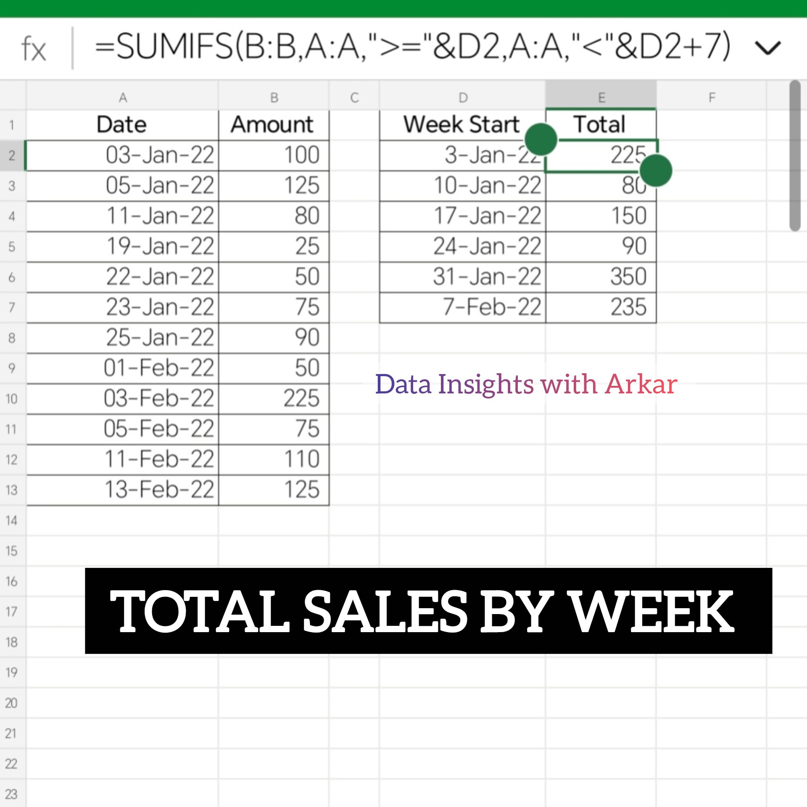
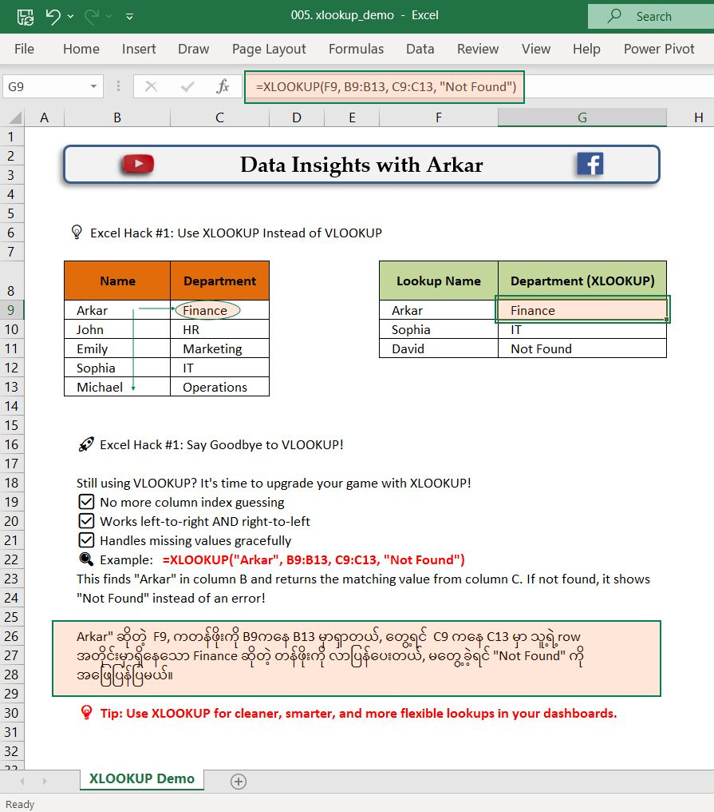
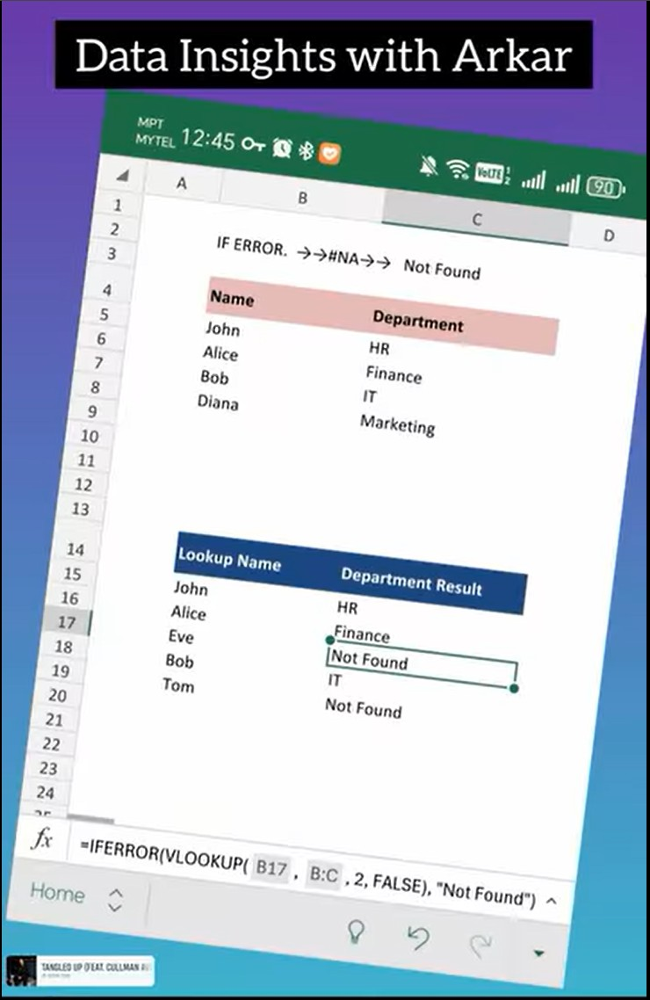
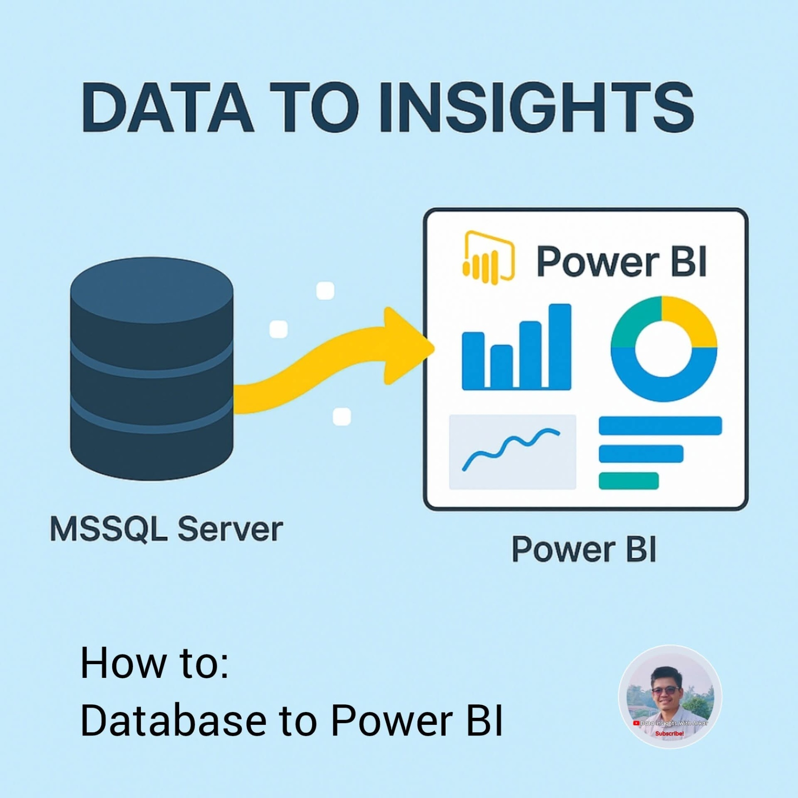
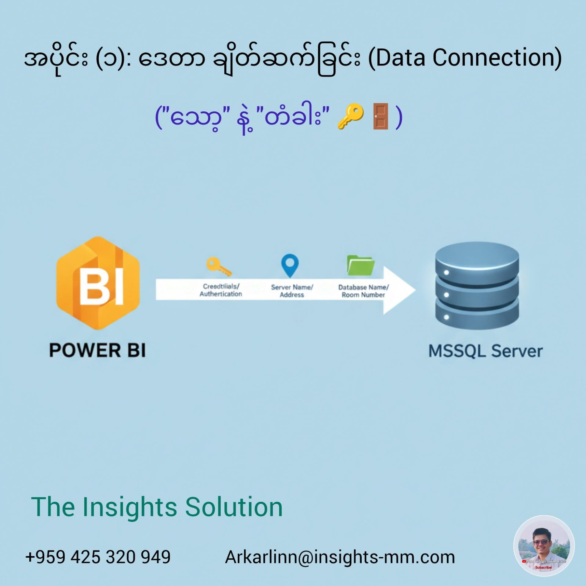
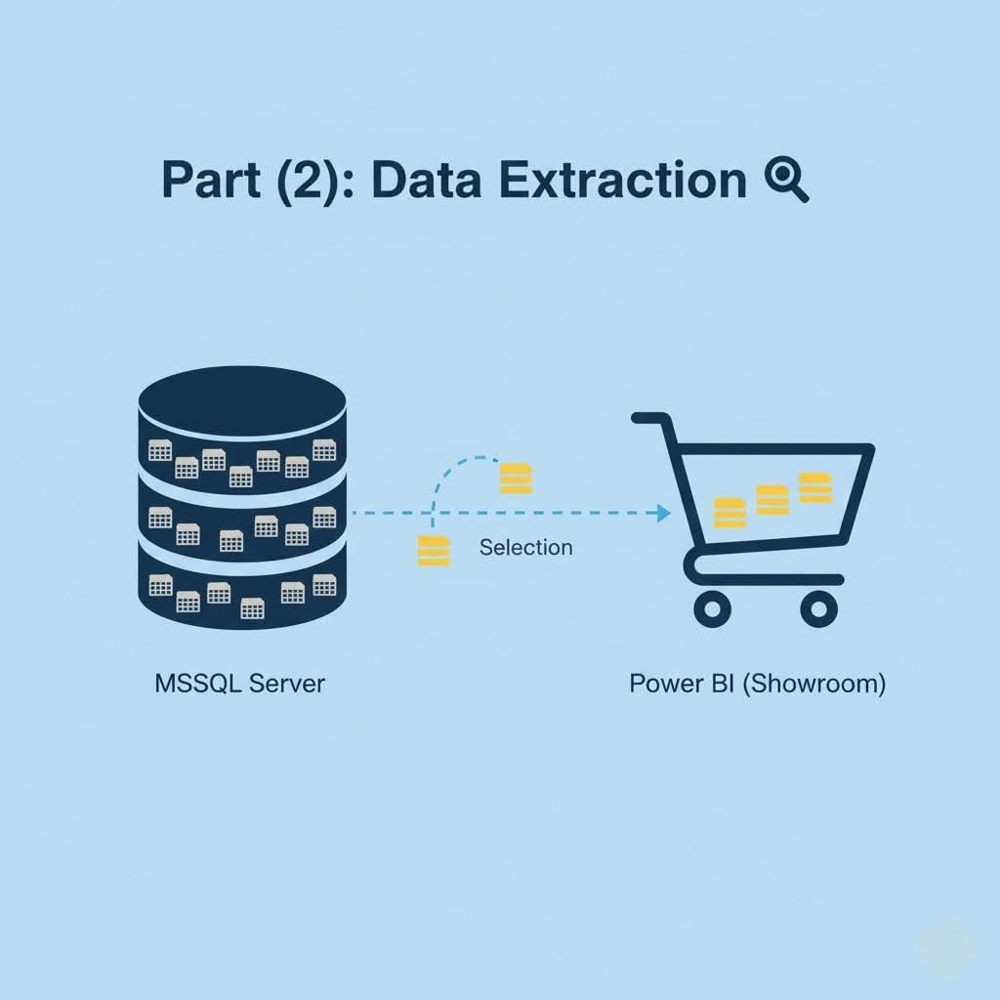
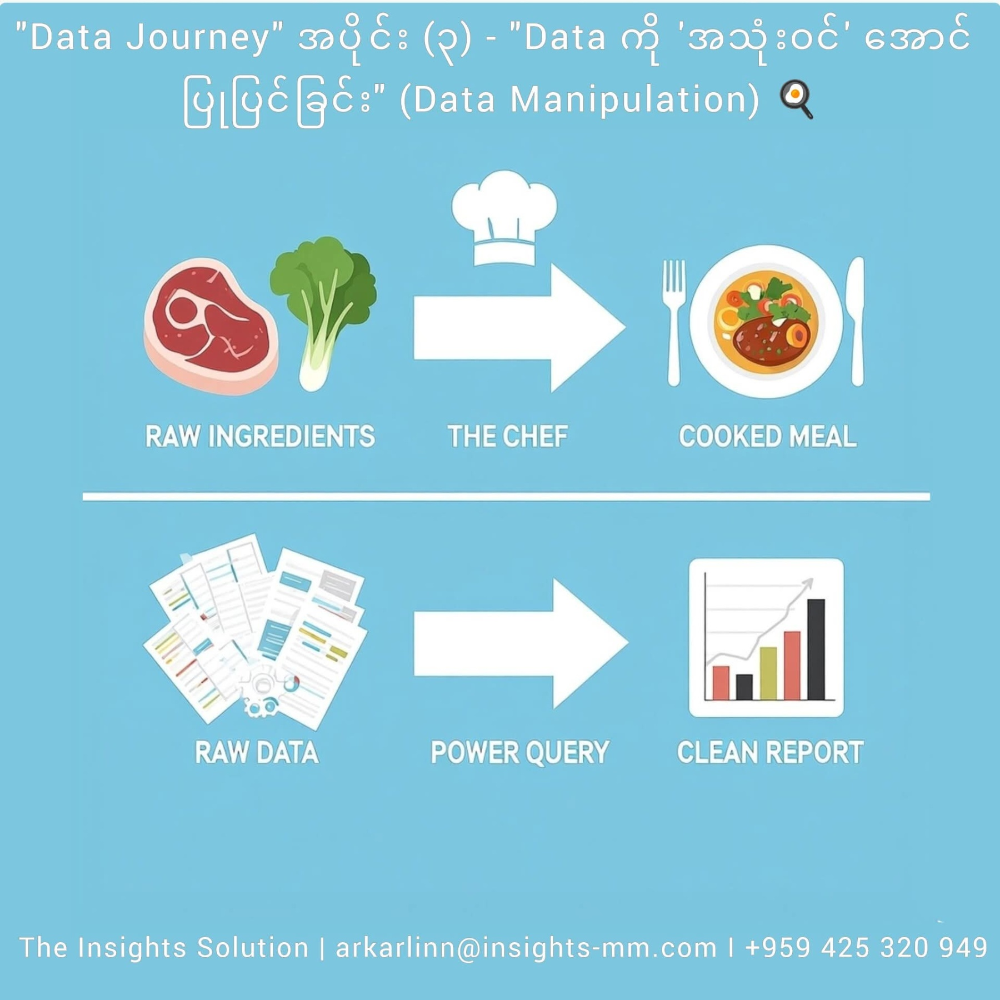
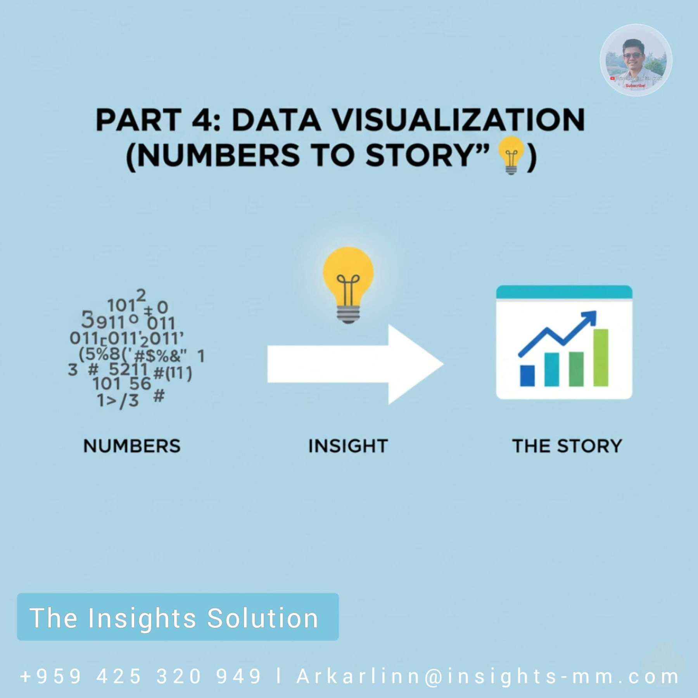
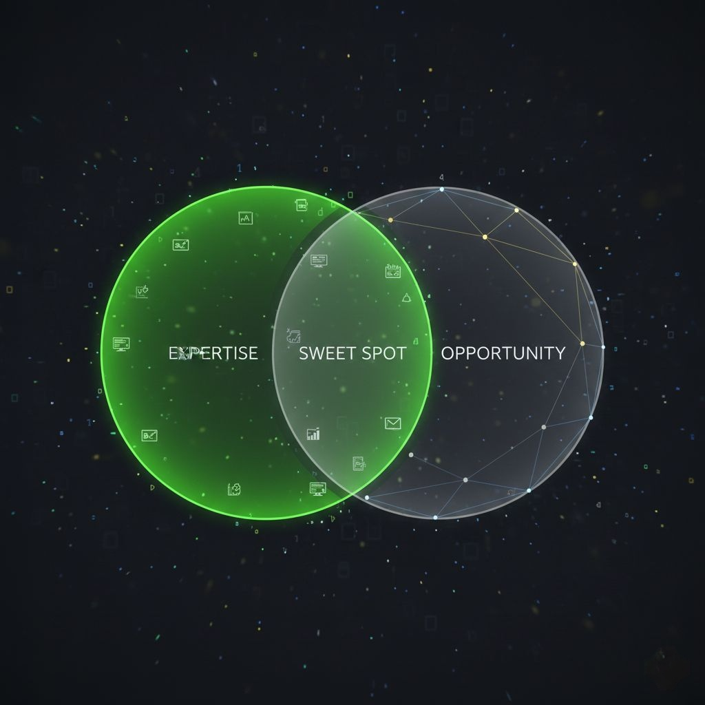

မင်္ဂလာပါ... ကျွန်တော် Arkar ပါ။ 👋
Microfinance လုပ်ငန်းခွင်ထဲမှာ ကျွန်တော် ၁၀ နှစ်ကျော် ဖြတ်သန်းခဲ့ပါတယ်။ ဒီခရီးလမ်းက လွယ်ကူခဲ့တာတော့ မဟုတ်ပါဘူး။ ကျွန်တော်ဟာ အောက်ခြေအဆင့် Trainee Credit Officer ဘဝကနေ စတင်ခဲ့ပါတယ်။ Trainee, Loan Officer, Credit Officer, Supervisor, Branch Manager အဆင့်ဆင့်ကနေ HQ မှာ Credit Analysis Manager, Credit Recovery Manager တာဝန်တွေယူပြီး အခုလက်ရှိ Senior Management Team (SMT) Member အဖြစ် တာဝန်ယူထားတဲ့ အထိ... နေရာစုံ၊ ဌာနစုံကို ကိုယ်တိုင် ဖြတ်သန်းခဲ့ရပါတယ်။ 🏢 ဒီ ၁၀ နှစ်တာ ခရီးလမ်းမှာ ကျွန်တော် အဓိက သတိထားမိတဲ့ အချက်တစ်ခုရှိတယ်။ အဲ့ဒါကတော့ - "Data ကျွမ်းကျင်မှု နဲ့ Management ဆုံးဖြတ်ချက်ကြားက ကွာဟချက် (Gap)" ပါပဲ။ 💡 ညီငယ်၊ ညီမငယ် အများစုဟာ Excel/Power BI စတဲ့ Tool တွေကို ကျွမ်းကျင်ကြပေမယ့် "ဒီ Data ကိုကြည့်ပြီး လုပ်ငန်းအတွက် ဘာဆုံးဖြတ်ချက်ချမလဲ?" ဆိုတဲ့နေရာမှာ အခက်အခဲ ရှိတတ်ကြပါတယ်။ ဒါကြောင့် ကျွန်တော့်ရဲ့ "Leader's Note" စီးရီးလေးကို စတင်လိုက်ပါတယ်။ 📘 ဒီ Album မှာ Technical Skill သက်သက်တင်မဟုတ်ဘဲ...
✅ အောက်ခြေမြေပြင် အတွေ့အကြုံနဲ့ HQ ရဲ့ Strategy ကို ဘယ်လို ချိတ်ဆက်မလဲ၊
✅ Data ကိုကြည့်ပြီး Professional ဆန်ဆန်၊ Smart ကျကျ ဘယ်လို တွေးခေါ်မလဲ၊
✅ ကိုယ့်ရဲ့ Career တက်လမ်းအတွက် ဘယ်လို ပြင်ဆင်မလဲ... စတဲ့ အတွေ့အကြုံ၊ အတွေးအမြင်များကို ပုံမှန် မျှဝေပေးသွားမှာ ဖြစ်ပါတယ်။ Professional ဆန်ပြီး တိုးတက်ချင်တဲ့ ညီငယ်ညီမငယ်များ ဒီ Album လေးမှာ ဆုံကြမယ်နော်။ 🤝✨
Arkar Linn
The Insights Solution
#TheInsightsSolution #LeaderNote #Microfinance #DataToDecision #CareerGrowth #ManagementSkills #Myanmar See less
Knowledge Bank 💡
Free tutorials, tips, and insights to level up your data skills everyday.
📺
Free Video Courses
PYTHON
Zero to Hero
Python for Data Analysis
Learn Python from scratch specifically for data science applications.
View Full Playlist →
POWER BI
Basic to Advance
Power BI Crash Course
Complete guide to building your first interactive dashboard.
View Full Playlist →
EXCEL
Hacks & Secrets
Pivot Tables & Excel Hacks
Boost your productivity with these hidden Excel features.
View Full Playlist →
📖
TIS Reading Room
Leader's Notes
Data Driven Culture တည်ဆောက်ခြင်း
လုပ်ငန်းခွင်မှာ Data ကို အခြေခံပြီး ဆုံးဖြတ်ချက်ချဖို့ ဘာတွေလိုအပ်မလဲ...
Leader's Notes
The Start-of-Month Mindset 📅
လစရက်ကို "အလုပ်စတဲ့ရက်" လို့မမြင်ဘဲ "Strategy ချတဲ့ရက်" လို့ မြင်ကြည့်ပါ 📊
မင်္ဂလာပါ...
ဒီနေ့ကတော့ လတစ်လရဲ့ အစပိုင်းရက် ဖြစ်ပါတယ်။ လကုန်ရက် စာရင်းပိတ်ခြင်း လုပ်ငန်းစဉ်တွေ ပြီးဆုံးသွားတဲ့အတွက် ဒီရက်ပိုင်းမှာ စိတ်လက်ပေါ့ပါးနေကြမယ့်သူတွေ ရှိသလို၊ Target အသစ်တွေအတွက် ပြင်ဆင်နေကြသူတွေလည်း ရှိနိုင်ပါတယ်။ Senior Management အမြင်နဲ့ ကြည့်မယ်ဆိုရင်တော့... လစရက် (First Week of the Month) ဟာ "Data တွေကို စကားပြောခိုင်းရမယ့် အချိန်" ပါပဲ။ ပြီးခဲ့တဲ့လက ပိတ်လိုက်တဲ့ စာရင်းတွေ (Closing Data) ဟာ Report တစ်စောင်အဖြစ် ဖိုင်တွဲသိမ်းဆည်းလိုက်ရုံ သက်သက် မဟုတ်ပါဘူး။ အဲဒီ Data တွေက ဒီလအတွက် လမ်းပြမြေပုံ (Roadmap) တွေ ဖြစ်သင့်ပါတယ်။ ဒါကြောင့် လုပ်ငန်းခွင်မှာ ထိရောက်မှုရှိစေဖို့ ဒီ (၃) ချက်ကို အဓိက စဉ်းစားစေချင်ပါတယ်-
1. Reflect (ပြန်လည်သုံးသပ်ခြင်း): ပြီးခဲ့တဲ့လက ရလဒ်တွေ (Trend) က ဘာကို ပြသနေလဲ?
2. Plan (စီမံချက်ချခြင်း): အားနည်းခဲ့တဲ့ အပိုင်းတွေကို ဒီလမှာ ဘယ်လို ပြန်လည်ဖြည့်ဆည်းမလဲ?
3. Execute (လက်တွေ့လုပ်ဆောင်ခြင်း): ဒီလ Target ကို ပြည့်မီဖို့ ဒီနေ့ကစပြီး ဘယ်လို အရှိန် (Pace) နဲ့ သွားမလဲ?
ညီငယ်ညီမငယ်တို့ကို အကြံပြုချင်တာက... ဒီနေ့မှာ ကိုယ့် Branch သို့မဟုတ် ကိုယ့်ဌာနရဲ့ ပြီးခဲ့တဲ့လ Report ကို ပြန်ဖွင့်ကြည့်ပါ။ အစီရင်ခံစာတစ်ခုအနေနဲ့ သိမ်းဆည်းလိုက်ရုံထက်... "ပြီးခဲ့တဲ့လ Performance က ဒီလအတွက် ဘာသင်ခန်းစာပေးလဲ?" ဆိုတာကို ၁၅ မိနစ်လောက် အချိန်ပေးပြီး သေချာ စဉ်းစားကြည့်စေချင်ပါတယ်။ အဲ့ဒီ ၁၅ မိနစ်စာ ပြင်ဆင်မှုက သင့်ရဲ့ ဒီလတစ်လလုံးကို ပိုပြီး Smart ကျစေပါလိမ့်မယ်။ ဒီလသစ်မှာ Strategy ကောင်းကောင်းနဲ့ ရလဒ်ကောင်းတွေ ဖန်တီးနိုင်ကြပါစေ။ 💪
Arkar Linn
The Insights Solution
#TheInsightsSolution #LeaderNote #MonthlyPlanning #DataDrivenStrategy #Microfinance #SmartWork See less
Leader's Notes
Data vs Insight 💡
Report တွေ အများကြီး ဖတ်နေရပေမယ့် ဘာလို့ ဆုံးဖြတ်ချက်ချဖို့ ခက်နေတာလဲ? 🤔
မင်္ဂလာပါ... ကျွန်တော်တို့ လုပ်ငန်းခွင်မှာ မကြာခဏ ကြုံတွေ့ရတဲ့ အခြေအနေတစ်ခု ရှိပါတယ်။ အဲဒါကတော့ - Report တွေ၊ ဇယားတွေ၊ ဂဏန်းတွေ အများကြီးကို နေ့တိုင်း ကြည့်နေရပေမယ့်... တကယ့် အရေးကြီးတဲ့ ဆုံးဖြတ်ချက် (Decision) ချရတော့မယ်ဆိုရင် ဘာကို အခြေခံရမှန်း မသိဘဲ ဝေဝါးနေတတ်တာမျိုးပါ။ ဒီလိုဖြစ်ရခြင်းရဲ့ အဓိက အကြောင်းရင်းကတော့ "Data" နဲ့ "Insight" ကို မကွဲပြားသေးလို့ ဖြစ်နိုင်ပါတယ်။ Senior Management အမြင်နဲ့ ပြောရမယ်ဆိုရင် ဒီနှစ်ခုက တခြားစီပါပဲ။
🔢 Data (ဒေတာ) ဆိုတာ - အကြမ်းထည် ကိန်းဂဏန်းတွေ ဖြစ်ပါတယ်။ ဥပမာ - "ဒီလ PAR က ၅% ရှိတယ်"၊ "Branch A က သိန်း ၁၀၀၀ ထုတ်ချေးတယ်" ဆိုတာမျိုးပါ။ ဒါက အမှန်တရား ဖြစ်ပေမယ့် ဆုံးဖြတ်ချက်ချဖို့ မလုံလောက်သေးပါဘူး။
💡 Insight (အနှစ်သာရ/ထိုးထွင်းသိမြင်ခြင်း) ဆိုတာ - အဲဒီ Data ကို ဆက်စပ်တွေးခေါ်ပြီး ထွက်လာတဲ့ "အဖြေ" ဖြစ်ပါတယ်။
ဥပမာ - "PAR က ၅% ရှိတယ်၊ ဒါပေမဲ့ လွန်ခဲ့တဲ့ ၃ လဆက်တိုက် ၁% စီ တက်လာနေတာ၊ အဓိကက စပါးဈေးကျလို့ တောင်သူတွေ ပြန်မဆပ်နိုင်တာ" ဆိုတဲ့ တွေ့ရှိချက်မျိုးပါ။ ဒါကြောင့် ညီငယ်ညီမငယ်တွေ အနေနဲ့ Report တစ်စောင် ပြင်ဆင်တော့မယ်ဆိုရင် အောက်ပါအချက်တွေကို သတိပြုစေချင်ပါတယ်-
✅ ဂဏန်းတွေချည်းပဲ ဇယားကွက်နဲ့ စီမပြပါနဲ့။ ဒီဂဏန်းတွေက "ကောင်းတာလား၊ ဆိုးတာလား" ဆိုတဲ့ သဘောထား (Context) ကို ထည့်သွင်းစဉ်းစားပါ။
✅ Trend ကို ကြည့်ပါ။ မနေ့ကထက် တက်လာတာလား၊ ကျသွားတာလား?
✅ "So What?" (ဒါဆို ဘာဆက်လုပ်မလဲ) ဆိုတဲ့ မေးခွန်းကို ကိုယ့် Report က ဖြေရှင်းပေးနိုင်မလား ပြန်စစ်ပါ။
Data သမားကောင်းတစ်ယောက်ဆိုတာ ဂဏန်းတွေကို စုဆောင်းသူ (Collector) မဟုတ်ပါဘူး။ Data ထဲကနေ Insight ကို ရှာဖွေဖော်ထုတ်ပေးသူ (Translator) သာ ဖြစ်ပါတယ်။
ဒီနေ့ကစပြီး ကိုယ့်ရဲ့ Report တွေကို Data အဆင့်ကနေ Insight အဆင့်ရောက်အောင် ပြောင်းလဲကြည့်လိုက်ပါ။ သင့်ရဲ့ တန်ဖိုး (Value) လည်း အများကြီး တက်လာပါလိမ့်မယ်။
Arkar Linn
The Insights Solution
#TheInsightsSolution #LeaderNote #DataVsInsight #SmartWork #DecisionMaking #Microfinance See less
Leader's Notes
Career & Skill Upgrade 💼
CV မှာ "Computer ကျွမ်းကျင်သည်" လို့ ရေးရုံနဲ့ မလုံလောက်တော့ပါ 💻
မင်္ဂလာပါ...
ကျွန်တော်တို့ ဝန်ထမ်းခေါ်ယူတဲ့အခါ (Recruitment) မှာ လျှောက်လွှာအများစုမှာ တွေ့ရလေ့ရှိတဲ့ အချက်တစ်ခုရှိပါတယ်။ အဲဒါကတော့ Skill နေရာမှာ "Computer Literate (ကွန်ပျူတာ အခြေခံကျွမ်းကျင်သည်)" ဆိုတဲ့ စာသားလေးပါပဲ။ လွန်ခဲ့တဲ့ ၁၀ နှစ်လောက်ကတော့ ဒီစာသားဟာ အလုပ်ရဖို့ လုံလောက်ကောင်း လုံလောက်ခဲ့ပါလိမ့်မယ်။ ဒါပေမဲ့ ၂၀၂၅ ခုနှစ်လို Digital ခေတ်ကြီးမှာတော့ ဒီအရာဟာ "အခြေခံလိုအပ်ချက် (Basic Requirement)" တစ်ခုသာ ဖြစ်သွားပါပြီ။ Senior Management တစ်ယောက်အနေနဲ့ Team Member အသစ်တွေကို ရွေးချယ်တဲ့အခါ ကျွန်တော်တို့ ရှာဖွေတာက "ကွန်ပျူတာ သုံးတတ်သူ" မဟုတ်တော့ပါဘူး။ "နည်းပညာကို သုံးပြီး ပြဿနာဖြေရှင်းနိုင်သူ" ကို ရှာဖွေနေတာ ဖြစ်ပါတယ်။ ဒါကြောင့် ညီငယ်ညီမငယ်တွေအနေနဲ့ ကိုယ့်ရဲ့ CV သို့မဟုတ် Performance Review မှာ ဒီလို ပြောင်းလဲရေးသားဖို့ အကြံပြုချင်ပါတယ်-
❌ Don't just write: "Excel ကျွမ်းကျင်သည်"
✅ Write this instead: "Excel တွင် Pivot Table, VLOOKUP တို့ကို အသုံးပြုပြီး Data Analysis ပြုလုပ်နိုင်သည်"
❌ Don't just write: "Report လုပ်တတ်သည်"
✅ Write this instead: "Power BI ကို အသုံးပြုပြီး နေ့စဉ် Branch Performance Dashboard များ ဖန်တီးနိုင်သည်"
💼 အဓိက ကွာခြားချက်ကတော့ - သာမန်လူတွေက သူတို့ "သုံးတတ်တဲ့ Tool" ကို ပြောပြကြတယ်။ Professional တွေကတော့ အဲဒီ Tool ကိုသုံးပြီး သူတို့ ဖန်တီးပေးနိုင်တဲ့ "ရလဒ် (Result)" ကို ပြောပြကြပါတယ်။ Microfinance လုပ်ငန်းခွင်မှာပဲဖြစ်ဖြစ်၊ ဘယ်လုပ်ငန်းခွင်မှာပဲဖြစ်ဖြစ်... သင်ဟာ "စာစီစာရိုက်သမား" မဟုတ်ဘဲ "Data နဲ့ အဖြေရှာသူ" တစ်ယောက် ဖြစ်ကြောင်း သက်သေပြနိုင်ပါစေ။ ဒါဟာ သင့်ရဲ့ Career တက်လမ်းကို အများကြီး အထောက်အကူ ပြုပါလိမ့်မယ်။
Arkar Linn
The Insights Solution
09 42532 0949
arkarlinn@insights-mm.com
#TheInsightsSolution #LeaderNote #CareerAdvice #CVTips #DataSkills #ProfessionalGrowth See less
Leader's Notes
Efficiency ⚡
အလုပ်ကြိုးစားတာ (Hard Work) နဲ့ အလုပ်တွင်တာ (Smart Work) မတူပါ 🏗️ vs 🚀
မင်္ဂလာပါ...
ကျွန်တော်တို့ရဲ့ လုပ်ငန်းခွင် ယဉ်ကျေးမှုမှာ "အလုပ်ကြိုးစားတယ်" ဆိုတာကို အချိန်အကြာကြီး လုပ်တာ၊ အိမ်မပြန်ဘဲ နောက်ကျတဲ့အထိ လုပ်နေတာမျိုးနဲ့ မှားယွင်းစွာ တိုင်းတာလေ့ ရှိပါတယ်။ ဒါပေမဲ့ Management နေရာကို ရောက်လာတဲ့အခါ အမြင် ပြောင်းသွားဖို့လိုပါတယ်။ ကျွန်တော်တို့ လိုချင်တာ "Effort (အားစိုက်ထုတ်မှု)" သက်သက် မဟုတ်ပါဘူး၊ "Result (ရလဒ်)" ပါ။ Hard Work နဲ့ Smart Work ကွာခြားချက်ကို လုပ်ငန်းခွင် ဥပမာနဲ့ ယှဉ်ပြရရင် -
🐢 Hard Work (ရိုးရိုးကြိုးစားခြင်း): ဝန်ထမ်းတစ်ယောက်က Branch ၅၀ ရဲ့ Data တွေကို Report ထုတ်ဖို့ Excel ဖိုင် ၅၀ ကို တစ်ခုချင်းဖွင့်၊ Copy ကူး၊ ပေါင်းထည့်ပြီး ၃ ရက်လောက် အချိန်ယူလုပ်တယ်။ ပြီးတော့ "ကျွန်တော် ပင်ပန်းခံပြီး ကြိုးစားထားပါတယ်" လို့ ပြောတယ်။
🐆 Smart Work (ဉာဏ်သုံးကြိုးစားခြင်း): နောက်ဝန်ထမ်းတစ်ယောက်ကတော့ Power Query သို့မဟုတ် Power BI ကိုသုံးပြီး အဲဒီဖိုင် ၅၀ ကို ၅ မိနစ်နဲ့ Auto ပေါင်းလိုက်တယ်။ ကျန်တဲ့အချိန်မှာ Data ကို Analyze လုပ်ပြီး Insight ရှာတယ်။
ညီငယ်ညီမငယ်တို့ကို မှာချင်တာက - လုပ်ငန်းခွင်မှာ "အလုပ်များနေသယောင် ပြဖို့ (Busy)" မကြိုးစားပါနဲ့။ "အလုပ်ပြီးမြောက်အောင် လုပ်ဖို့ (Productive)" ကြိုးစားပါ။ ကွန်ပျူတာရှေ့မှာ အချိန်ကုန်နေတာ ဂုဏ်ယူစရာ မဟုတ်ပါဘူး။ နည်းပညာ (Tool) တွေကို သုံးပြီး အချိန်တိုအတွင်း တိကျတဲ့အဖြေထုတ်ပေးနိုင်မှသာ Senior တွေ သဘောကျတဲ့ Smart Employee ဖြစ်လာမှာပါ။ ဒီနေ့ ကိုယ်လုပ်နေတဲ့ အလုပ်တစ်ခုကို ပြန်မေးကြည့်ပါ... "ဒီထက်မြန်အောင် လုပ်လို့ရတဲ့ နည်းလမ်း ရှိမလား?" လို့။
Arkar Linn
The Insights Solution
#TheInsightsSolution #LeaderNote #SmartWork #Efficiency #Productivity #WorkSmarter
Leader's Notes
Accuracy 🎯
Data မှားတာဟာ ငွေပျောက်တာထက် ပိုကြောက်ဖို့ကောင်းပါတယ် 📉⚠️
မင်္ဂလာပါ...
ငွေကြေးဝန်ဆောင်မှုလုပ်ငန်း (Financial Service) တစ်ခုမှာ အကြောက်ရဆုံးအရာက ဘာလဲလို့မေးရင် လူအများစုက "ငွေပျောက်တာ" လို့ ဖြေကြပါလိမ့်မယ်။ ဒါပေမဲ့ Management အပိုင်းကို တာဝန်ယူထားရသူတွေအတွက်တော့ ငွေပျောက်တာထက် ပိုကြောက်ဖို့ကောင်းတာက "Data မှားနေတာ (Data Inaccuracy)" ပါပဲ။ ဘာကြောင့်လဲဆိုတော့ -
💸 ငွေပျောက်ရင် ပမာဏ ဘယ်လောက်လဲဆိုတာ ချက်ချင်းသိရတယ်။ ချက်ချင်း အရေးယူဖြေရှင်းလို့ ရတယ်။ ဆုံးရှုံးမှုက အကန့်အသတ် ရှိတယ်။
📉 Data မှားရင်တော့... အဲဒီအမှားကို အခြေခံပြီး ဆုံးဖြတ်ချက်တွေ ချမိတော့တာပါပဲ။
ဥပမာ - Branch တစ်ခုရဲ့ PAR (Portfolio At Risk) က တကယ်တမ်း ၁၀% ရှိနေပေမယ့်၊ Data အမှားကြောင့် (သို့) Early Closures ပြပြီး စာရင်းပြန်ထုတ်ထားလို့ PAR ၂% လို့ Report တက်လာတယ် ဆိုပါစို့။ Management က အခြေအနေကောင်းတယ်ထင်ပြီး အဲဒီ Branch ကို Investment ငွေထပ်ဖြည့်ပေးလိုက်မယ်။ နောက်ဆုံး ပြဿနာတက်မှ သိလိုက်ရတဲ့အခါ ဆုံးရှုံးမှုက ဆယ်ဆမက ကြီးမားသွားပါပြီ။ ဒါကြောင့် ညီငယ်ညီမငယ်တို့ကို အမြဲ သတိပေးချင်တာက -
🐢 Speed is good, but Accuracy is everything. Report တင်တာ မြန်ဖို့ထက် မှန်ဖို့က ပိုအရေးကြီးပါတယ်။
🔍 Self-Audit Habit ကိုယ့်လက်ထဲက Data ကို သူများမစစ်ခင် "ငါမှားနိုင်လား" ဆိုတဲ့ စိတ်နဲ့ ကိုယ်တိုင် အရင်ဆုံး စစ်ဆေးတဲ့ အလေ့အကျင့် လုပ်ပါ။
✅ Validate Formulas Excel Formula တွေကို ကူးချ (Copy Paste) လုပ်တဲ့အခါ Cell Reference တွေ လွဲမသွားအောင် အမြဲပြန်ကြည့်ပါ။ ကျွန်တော်တို့ရဲ့ ဆုံးဖြတ်ချက် (Decision) တွေ မှန်ကန်ဖို့ဆိုတာ သင်တို့ပေးပို့လိုက်တဲ့ Data တွေရဲ့ မှန်ကန်မှု (Accuracy) ပေါ်မှာ ၁၀၀% မူတည်နေပါတယ်။ "ကျွန်တော့် Report က ယုံကြည်ရပါတယ်" လို့ ရဲရဲဝံ့ဝံ့ ပြောနိုင်တဲ့ Professional တစ်ယောက် ဖြစ်ပါစေ။
Arkar Linn
The Insights Solution
#TheInsightsSolution #LeaderNote #DataAccuracy #Precision #u0906u092a

Leader's Notes
The Excel Myth 📉➡️🧠
Excel ဆိုတာ စာရင်းပေါင်းဖို့သက်သက် မဟုတ်ပါ (It's a Logic Tool) 💡
မင်္ဂလာပါ...
ကျွန်တော် သင်တန်းတွေပေးတဲ့အခါပဲဖြစ်ဖြစ်၊ ဝန်ထမ်းသစ်တွေကို မေးတဲ့အခါပဲဖြစ်ဖြစ် မကြာခဏ ကြားရတာက "ကျွန်တော်/ကျွန်မ Excel ကျွမ်းကျင်ပါတယ်၊ SUM တို့ AVERAGE တို့ ပေါင်းတတ်ပါတယ်" ဆိုတဲ့ စကားပါ။ တကယ်တော့ Management အမြင်အရ Excel ဆိုတာ "ကြီးမားတဲ့ ဂဏန်းပေါင်းစက် (Calculator)" တစ်ခု မဟုတ်ပါဘူး။ Excel ဆိုတာ "ယုတ္တိဗေဒ (Logic)" ကို အခြေခံတဲ့ တွေးခေါ်မှုဆိုင်ရာ Tool တစ်ခုပါ။ဘာကွာခြားလဲဆိုတာ ဥပမာနဲ့ ယှဉ်ကြည့်ရအောင် -
🧮 Calculator Mindset (ဂဏန်းပေါင်းစက် သမား): ချေးငွေပမာဏ ၁၀ သိန်း၊ အတိုး ၂.၅% ဆိုရင် ၂ သောင်းခွဲကျမယ်ဆိုပြီး အဖြေကို လက်နဲ့ရိုက်ထည့်တယ်။ (ဒါက Data Entry ပါ)။
🧠 Logic Mindset (Excel သမား): သူက ဂဏန်းကို မရိုက်ထည့်ပါဘူး။ Logic (ဖော်မြူလာ) ကို တည်ဆောက်ပါတယ်။ "Principal Amount က ဘယ်လောက်ပဲပြောင်းပြောင်း၊ Interest Rate က ဘယ်လိုပဲပြောင်းပြောင်း အဖြေအလိုလိုထွက်ရမယ်" ဆိုတဲ့ စနစ် (System) ကို တည်ဆောက်ပါတယ်။ ဒါကြောင့် ညီငယ်ညီမငယ်တွေကို အကြံပြုချင်တာက -
✅ Stop Memorizing Formulas: VLOOKUP ဖော်မြူလာကို အလွတ်မကျက်ပါနဲ့။ "ငါလိုချင်တဲ့ Data က ဘယ်မှာရှိလဲ၊ အဲ့ဒါကို ဘယ်လိုလှမ်းယူမလဲ" ဆိုတဲ့ သဘောတရားကို နားလည်အောင် လုပ်ပါ။
✅ Think in Scenarios: "တကယ်လို့ Client က ရက်ကျော်သွားရင် ဒဏ်ကြေး ဘယ်လိုတွက်မလဲ?" (IF function) ဆိုတဲ့ အခြေအနေတွေကို ကြိုတင်စဉ်းစားတတ်တဲ့ အကျင့်လုပ်ပါ။ Excel ကျွမ်းကျင်တယ်ဆိုတာ Function တွေအများကြီး သိတာကို ဆိုလိုတာ မဟုတ်ပါဘူး။ ရှုပ်ထွေးတဲ့ ပြဿနာတွေကို ရှင်းလင်းတဲ့ Logic နဲ့ ဖြေရှင်းနိုင်တာကို ဆိုလိုတာပါ။ ဒီနေ့ကစပြီး Excel ကို ဖွင့်လိုက်တိုင်း "ငါ စာရင်းဖြည့်မယ်" လို့ မတွေးဘဲ "ငါ Logic တည်ဆောက်မယ်" လို့ တွေးကြည့်လိုက်ပါ။ သင့်ရဲ့ Skill Level တစ်ဆင့် မြင့်သွားပါလိမ့်မယ်။
Arkar Linn
The Insights Solution
#TheInsightsSolution #LeaderNote #ExcelSkills #LogicThinking #DataMindset #ProfessionalGrowth
Leader's Notes
The Power of Visualization 📊🚀
Dashboard တစ်ခုက သင့်ရဲ့ တန်ဖိုး (Value) ကို ဘယ်လို ပြောင်းလဲပေးနိုင်လဲ? 💎
မင်္ဂလာပါ... မင်္ဂလာရှိသော တနင်္လာနေ့လေး ဖြစ်ပါစေ။ လုပ်ငန်းခွင်မှာ Data နဲ့ အလုပ်လုပ်နေတဲ့ ညီငယ်ညီမငယ်တွေကို မေးခွန်းတစ်ခု မေးချင်ပါတယ်။ "သင်ဟာ ကုမ္ပဏီအတွက် Report ထုတ်ပေးသူလား? ဒါမှမဟုတ် အဖြေ (Answer) ထုတ်ပေးသူလား?" Senior Management အမြင်အရ ဒီနှစ်ခုက တန်ဖိုး (Value) ချင်း မတူပါဘူး။
📄 The Reporter (Excel Level): လကုန်ရင် Excel ဇယားကြီးတွေ ပေးပို့တယ်။ ဂဏန်းတွေ အများကြီးပါတယ်။ "ရော့... ဒီမှာ Data တွေ၊ ကြိုက်သလို ကြည့်ကြတော့" ဆိုတဲ့ ပုံစံမျိုးပါ။ ဒါက Information ပေးတာဖြစ်လို့ တန်ဖိုးတစ်ခု ရှိပေမယ့်၊ ဆုံးဖြတ်ချက်ချသူတွေအတွက်တော့ ခေါင်းရှုပ်ရပါတယ်။
🖥️ The Advisor (Power BI Level): သူကတော့ ဂဏန်းတွေကို ဒီတိုင်းမပေးပါဘူး။ Interactive Dashboard တစ်ခုအဖြစ် ဖန်တီးပေးပါတယ်။ "ဘယ် Branch က အားအနည်းဆုံးလဲ?" (Map မှာ အနီရောင် ပြနေမယ်) "ပြီးခဲ့တဲ့လနဲ့ ယှဉ်ရင် ဘယ်လောက်တက်လာလဲ?" (Trend Line နဲ့ ပြမယ်) Management တွေက Dashboard တစ်ခုကို မြင်လိုက်တာနဲ့ "ဘာဖြစ်နေလဲ" ဆိုတာကို ၃ စက္ကန့်အတွင်း သိလိုက်ရတယ်။ အဲဒီ "အချိန်ကုန်သက်သာစေမှု" နဲ့ "ရှင်းလင်းမှု" ဟာ သင့်ရဲ့ တန်ဖိုး (Value) ပါပဲ။
ကျွန်တော့်အတွေ့အကြုံအရ - Excel ဇယားတစ်ခုဟာ "Static Map (မြေပုံရွက်)" တစ်ခုနဲ့ တူပြီး၊ Power BI Dashboard ကတော့ "GPS Navigation" နဲ့ တူပါတယ်။ မြေပုံက လမ်းကို ပြပေးပေမယ့်၊ GPS ကတော့ "ဘယ်လမ်းက သွားရင် ပိုမြန်မလဲ" ဆိုတာကို လမ်းညွှန်ပေးနိုင်ပါတယ်။ ခေတ်မီတဲ့ ခေါင်းဆောင်တွေက GPS လိုလူမျိုးကိုပဲ လစာပိုပေးပြီး နေရာပေးလေ့ရှိပါတယ်။ ဒါကြောင့် ဒီနေ့ တနင်္လာနေ့ကစပြီး...
ကိုယ့်ရဲ့ Career ကို နောက်တစ်ဆင့် (Next Level) မြှင့်တင်ဖို့အတွက် Data Visualization (Power BI) ကို စတင်လေ့လာဖို့ တိုက်တွန်းချင်ပါတယ်။ သင်ဟာ ဂဏန်းပေါင်းသူ သက်သက် မဟုတ်ပါဘူး။ လုပ်ငန်းရဲ့ အနာဂတ်ကို ပုံဖော်ပေးသူ (Architect) တစ်ယောက်ပါ။ 🔥
Arkar Linn
The Insights Solution
#TheInsightsSolution #LeaderNote #PowerBI #DataVisualization #CareerGrowth #ValueCreation #MondayMotivation
Leader's Notes
🧠 Great Leader "Secret Mindset"
🧠 Great Leader တိုင်းမှာရှိတဲ့ "Secret Mindset" (Or: "What" ထက် "Why" ကို မေးပါ)
🧠 Great Leader တိုင်းမှာရှိတဲ့ "Secret Mindset" (Or: "What" ထက် "Why" ကို မေးပါ)
မင်္ဂလာပါ... "The Insights Solution" မှ ကြိုဆိုပါတယ်။
ကျွန်တော်တို့ Team တွေမှာ Challenge တစ်ခုခု (ဥပမာ - Sales လျော့သွားတာမျိုး) ကြုံရတဲ့အခါ... ပုံမှန်အားဖြင့် ကျွန်တော်တို့ဟာ ဒီမေးခွန်းတွေကိုပဲ အလွယ်တကူ မေးမိတတ်ကြပါတယ်။ "Sales တွေ ဘယ်လောက်ကျသွားလဲ?" (What happened?) "ဘယ်သူ့ကြောင့် ကျတာလဲ?" (Who is responsible?) ဒီမေးခွန်းတွေက Report ကောင်းတစ်ခု ထွက်လာဖို့ ကူညီပေးနိုင်ပေမဲ့၊ Solution ကောင်းတစ်ခု ထွက်လာဖို့တော့ မလုံလောက်သေးပါဘူး။ SMT (Senior Management Team) Level ကို တက်လှမ်းချင်တဲ့ မောင်ငယ်ညီမငယ်တွေ၊ မိတ်ဆွေတွေအတွက် ကျွန်တော်အကြံပေးချင်တာကတော့... ပြဿနာတစ်ခုကို မြင်တာနဲ့
✅ "Why did it happen?" (ဘာကြောင့် ဒီလိုဖြစ်ရတာလဲ?) ဆိုတဲ့ မေးခွန်းကို အရင်ဆုံး စမေးကြည့်စေချင်ပါတယ်။ ဒါက "Problem Solving" ရဲ့ သော့ချက်ပါပဲ။
💡 The "5 Whys" Technique: ကမ္ဘာကျော် Toyota ကုမ္ပဏီက စတင်ခဲ့ပြီး အခုချိန်ထိ ထိပ်တန်းကုမ္ပဏီကြီးတွေ သုံးနေတဲ့ နည်းလမ်းလေးတစ်ခုကို လက်ဆောင်မျှဝေပါရစေ။ ပြဿနာတစ်ခုတွေ့ရင် "Why" လို့ (၅) ခါ ဆက်တိုက်မေးကြည့်တဲ့ နည်းလမ်းပါ။
Example: Report ပို့တာ ပုံမှန်ထက် နောက်ကျနေတယ်။ (The Challenge)
Why? 👉 Data စုရတာ ကြာနေလို့။
Why? 👉 Branch တွေက Excel File တွေ ပုံစံတူမပို့လို့။
Why? 👉 Standard Template တစ်ခု မသတ်မှတ်ထားလို့။
Why? 👉 Head Office က Training သေချာ မပေးခဲ့လို့။
Why? 👉 Training Process မှာ Data Skills ကို ထည့်မဆွဲထားလို့။
(Root Cause!) 🎯 တွေ့လိုက်ပါသလား? အပေါ်ယံကြည့်ရင် "ဝန်ထမ်းတွေ နှေးလို့" လို့ ထင်ရပေမဲ့၊ တကယ်တမ်းကျတော့ "Training System ကောင်းတစ်ခု လိုအပ်နေတာ" ကို ရှာဖွေတွေ့ရှိသွားပါတယ်။ လူကို အပြစ်တင်စရာမလိုဘဲ System ကို ပြင်လိုက်တာနဲ့ အားလုံးအတွက် ပိုကောင်းတဲ့ ရလဒ်ကို ရသွားစေပါတယ်။
Leadership Note: Report တစ်စောင်ကို ဖတ်တဲ့အခါ "ကိန်းဂဏန်းတွေ" ရဲ့ နောက်ကွယ်က "အကြောင်းရင်း" ကို မြင်အောင်ကြည့်တတ်တဲ့ အလေ့အကျင့်လေး လုပ်ကြည့်ပါ။ ဒါဆိုရင် သင်ဟာ ရိုးရိုး "Reporter" အဆင့်ကနေ တန်ဖိုးရှိတဲ့ "Problem Solver" အဆင့်ကို အလိုလို ရောက်ရှိလာပါလိမ့်မယ်။ ဒီ Post လေးက သင့်အတွက် အကျိုးရှိတယ်ဆိုရင် Team Member တွေကို ပြန်မျှဝေပေးဖို့ မမေ့နဲ့နော်။
See you in Day 10!
#TheInsightsSolution #LeadersNote #Day9 #RootCauseAnalysis #5Whys #ProblemSolving #GrowthMindset #MyanmarPersonalBranding
Leader's Notes
⏱️ Meeting မစခင် (၁၅) မိနစ်အလို"
⏱️ Meeting မစခင် (၁၅) မိနစ်အလို... (သို့) ကျွန်တော့်ရဲ့ Big Data အမှား"
မင်္ဂလာပါ... "The Insights Solution" မှ ကြိုဆိုပါတယ်။ ဒီနေ့တော့ Technical တွေခဏနားပြီး ကျွန်တော့်ဘဝမှာ ရင်အခုန်ရဆုံး ဖြစ်ခဲ့တဲ့ ဖြစ်ရပ်မှန်တစ်ခုကို ပြောပြချင်ပါတယ်။ လွန်ခဲ့တဲ့ နှစ်အနည်းငယ်... COVID-19 3rd Wave ကာလပေါ့။
အဖွဲ့အစည်းကလည်း အခက်အခဲတွေ အများကြီး ကြုံနေရတဲ့အချိန် (Crisis Time) ဖြစ်ပါတယ်။ အဲဒီအချိန်မှာ ကျွန်တော်က Big Data Analysis တွေကို စပြီး ကိုင်တွယ်နေပါပြီ။ Report တွေကို မြန်ချင်လို့ Automation နည်းပညာတွေ စသုံးနေတဲ့အချိန်ပေါ့။ အပတ်စဉ် အရေးကြီးတဲ့ Online Meeting တစ်ခုရှိတယ်။ Boss က Australia နိုင်ငံသားပါ။ သူက Detail အရမ်းကျတယ်၊ အရမ်းစေ့စပ်သေချာတဲ့သူ (Perfectionist) ပေါ့။ Meeting မှာ တခြားနိုင်ငံခြားသားတွေလည်း အများကြီး ပါတယ်။ ကျွန်တော် ယုံကြည်မှုရှိရှိနဲ့ Automation Run ပြီးထွက်လာတဲ့ Report ကို Boss ဆီ Email ပို့လိုက်တယ်။ ပို့ပြီးမှ စိတ်ထဲမတင်မကျဖြစ်ပြီး Data ကို ပြန်စစ်လိုက်တော့... 😱 "ဟာ... သွားပြီ။ Automation Script မှားပြီး Data တွေ လွဲနေပါလား!" Meeting စဖို့က (၁၅) မိနစ် ပဲ လိုတော့တယ်။ အဲဒီ (၁၅) မိနစ်တာ ကာလလေးကတော့... ကျွန်တော့်အတွက် "ကမ္ဘာပေါ်မှာ အလျှင်မြန်ဆုံးလူသား" ဖြစ်ခဲ့ရတဲ့ အချိန်ပါပဲ။ 🏃♂️💨 Boss က အဲဒီ Report ကိုဖွင့်ပြီး Meeting မှာ ပြောတော့မှာ။ မှားနေတဲ့ Data တွေကို နိုင်ငံခြားသားတွေရှေ့မှာ ပြမိရင် အဖွဲ့အစည်းရော၊ ကျွန်တော့် Professional Image ပါ ထိခိုက်တော့မယ်။
ကျွန်တော် ဘာလုပ်ခဲ့လဲ?
ကြောက်ပြီး ငြိမ်နေလို့မရဘူး။ Panic မဖြစ်ဘဲ Focus ပြန်လုပ်ပါတယ်။ ချက်ချင်းပဲ Error ကို ရှာ၊ Script ကို ပြင်၊ Data ကို ပြန် Run ပြီး... Meeting မစခင် (၁၅) မိနစ်အလို အရောက်မှာပဲ Correct Version ကို Boss ဆီ ပြန်ပို့ (Send) လိုက်နိုင်ခဲ့ပါတယ်။ "Boss ရေ... ခုနက File မှာ System Error လေး နည်းနည်းရှိလို့ ဒါလေးပဲ သုံးပေးပါ" လို့ လှမ်းပြောလိုက်တော့... Boss က ပြန်ပြောတယ်။ ✅ "Well done, Arkar! Good recovery." (ကောင်းတယ် အာကာ.. အချိန်မီ ပြင်နိုင်လို့ တော်တယ်) တဲ့။ Meeting ပြီးတော့ ကိုယ့်ကိုယ်ကို ဘယ်လောက်တောင် ကျေနပ်သွားလဲ မမေးနဲ့တော့။
💡 Leader's Note: Big Data နဲ့ Automation သုံးတဲ့အခါ "မြန်တာ" က ကောင်းပေမဲ့ "မှန်ဖို့" က ပိုလိုပါတယ်။ ဒါပေမဲ့ ပိုအရေးကြီးတာက... အမှားတစ်ခုတွေ့ရင် ချက်ချင်းလက်ငင်း ဖြေရှင်းနိုင်တဲ့ "Agility" (ဖျတ်လတ်မှု) ပါပဲ။ Leader တစ်ယောက်ဖြစ်လာရင် အရာရာဟာ ကိုယ့်ထိန်းချုပ်မှုအောက်မှာ မရှိနိုင်ပါဘူး။ ဒါပေမဲ့ ပြဿနာတက်လာတဲ့အခါ ၁၅ မိနစ်ပဲ အချိန်ရရ၊ ၁ မိနစ်ပဲ အချိန်ရရ... အကောင်းဆုံး ဖြေရှင်းနိုင်ဖို့ကသာ အဓိကပါ။ ဒီနေ့တော့ ဒီလောက်ပါပဲ။ မနက်ဖြန်ကျရင် Microfinance သမားတိုင်း မဖြစ်မနေသိထားရမယ့် Metric (၃) ခု အကြောင်း ပြောပြမယ်။
See you in Day 11!
#TheInsightsSolution #LeadersNote #Day10 #CrisisManagement #BigData #Automation #ExperienceSharing #CareerJourney #DataToDecision
Leader's Notes
The 3 Key Metrics"
📊 Microfinance လောကရဲ့ "အသက်" (၃) သက် (The 3 Key Metrics)
မင်္ဂလာပါ... "The Insights Solution" မှ ကြိုဆိုပါတယ်။ Data သမားတစ်ယောက်အနေနဲ့ MFI (Microfinance) တစ်ခုမှာ အလုပ်လုပ်တော့မယ်ဆိုရင် Report ပေါင်း ၁၀၀ လောက် လုပ်ရနိုင်ပါတယ်။ ဒါပေမဲ့ Senior Management (SMT) Level က အမြဲတမ်း စောင့်ကြည့်နေတဲ့ "The Big Three" (အဓိက မက်ထရစ် ၃ ခု) ရှိပါတယ်။ Junior တွေအနေနဲ့ Report ထုတ်ပေးရုံတင်မဟုတ်ဘဲ၊ ဒီဂဏန်းတွေရဲ့ သဘောတရားနဲ့ တွက်ချက်ပုံတွေကို နားလည်ထားရင် သင်ဟာ Boss နဲ့ "Language" တူသွားပါပြီ။
1️⃣ PAR > 30 Days (Portfolio at Risk - စွန့်စားရနိုင်ခြေ)
Meaning: ရက်ပေါင်း (၃၀) ကျော်ကြာ အကြွေးမဆပ်နိုင်တဲ့ ငွေပမာဏ ဘယ်လောက်ရှိလဲ။
The Insight: ဒါက MFI တစ်ခုရဲ့ "သွေးပေါင်ချိန်" ပါပဲ။ PAR တက်လာတယ်ဆိုတာ ကျွန်တော်တို့ရဲ့ ချေးငွေအရည်အသွေး (Quality) ကျဆင်းလာတာကို ပြပါတယ်။
📐 Equation: PAR (>30 Days) = Outstanding Balance (>30 Days) / Total Gross Loan Portfolio
🎯 Global Standard: နိုင်ငံတကာစံနှုန်းအရ 5% အောက် မှာ ရှိနေရင် ကျန်းမာတယ် (Healthy) လို့ ယူဆပါတယ်။
2️⃣ OSS (Operational Self-Sufficiency - လုပ်ငန်းလည်ပတ်နိုင်စွမ်း)
Meaning: ဝင်ငွေ (Revenue) က ကုန်ကျစရိတ် (Expense) အားလုံးကို ကာမိရဲ့လား။
The Insight: ဒါက "အသက်ရှူလမ်းကြောင်း" ပါ။
100% အောက် = အရှုံးပေါ်နေတယ် (Sustainability မရှိသေး)။
100% ကျော်ပြီဆိုမှ = ကိုယ့်ခြေထောက်ပေါ်ကိုယ်ရပ်ပြီး အမြတ်စထွက်နေပြီ (Real Business ဖြစ်ပြီ)။
📐 Equation: OSS = Operating Revenue / (Financial Exp + Loan Loss Provision + Operating Exp)
🎯 Global Standard: > 100% ဆိုရင် Break-even ဖြစ်ပြီး၊ > 110% ရှိမှသာ ရေရှည်ခိုင်မြဲတဲ့ MFI တစ်ခုလို့ သတ်မှတ်ကြပါတယ်။
3️⃣ OER (Operating Expense Ratio - လုပ်ငန်းသုံးစရိတ် အချိုးအစား)
Meaning: ငွေ (၁၀၀) ကျပ် ထုတ်ချေးနိုင်ဖို့အတွက် ရုံးစရိတ်/ဝန်ထမ်းစရိတ် ဘယ်လောက် သုံးလိုက်ရလဲ။
The Insight: ဒါက "ကြွက်သားအား" (Efficiency) ပါ။ ဒီ Ratio နည်းလေလေ၊ ကျွန်တော်တို့ အလုပ်လုပ်ရတာ တွက်ခြေကိုက်လေလေ၊ ဝန်ထမ်းတွေ Smart ဖြစ်လေလေပါပဲ။
📐 Equation: OER = Operating Expense / Average Gross Loan Portfolio
🎯 Global Standard: Microfinance သဘာဝအရ လူအင်အားသုံးရလို့ Bank တွေထက် စရိတ်မြင့်တတ်ပေမဲ့၊ နိုင်ငံတကာ MFI ကောင်းတွေဟာ 10% - 15% ကြားမှာ ထိန်းထားလေ့ရှိပါတယ်။ (Lower is Better).
💡 Leader's Note: Report တစ်စောင်ကို ကြည့်ရင်... "ချေးငွေ ဘယ်လောက်ထုတ်လိုက်လဲ" (Disbursement) ဆိုတဲ့ Volume ကိုပဲ ကြည့်တာသာမက Quality (PAR ကောင်းလား?)၊ Sustainability (OSS ကျော်လား?)၊ Efficiency (OER သက်သာလား?) ဆိုတာကိုပါ တွဲကြည့်တတ်ပါစေ။ ဒါမှ သင်ဟာ "စာရင်းကိုင်" အဆင့်ကနေ "Business Analyst" အဆင့်ကို တက်လှမ်းနိုင်မှာပါ။
မနက်ဖြန် (Day 12) မှာတော့... Data သမားတွေ၊ Manager တွေ အဖြစ်များဆုံး ပြဿနာတစ်ခုဖြစ်တဲ့ "အလုပ်ပိခြင်း" ကို ဖြေရှင်းဖို့ "၈ နာရီစာအလုပ်ကို ၂ နာရီနဲ့ ပြီးအောင်လုပ်နည်း" ကို မျှဝေပေးသွားပါမယ်။ See you in Day 12!
Arkar Linn
The Insights Solution
#TheInsightsSolution #LeadersNote #Day11 #Microfinance #KeyMetrics #PAR #OSS #OER #DataLiteracy #CareerGrowth
Leader's Notes
The Secret of High Performers"
⏳ ၈ နာရီစာ အလုပ်ကို ၂ နာရီနဲ့ ပြီးအောင် လုပ်နည်း (The Secret of High Performers)
မင်္ဂလာပါ... "The Insights Solution" မှ ကြိုဆိုပါတယ်။
ကျွန်တော်တို့ Trainee ဘဝတုန်းကတော့ အလုပ်များမှ အလုပ်လုပ်တယ်လို့ ထင်ခဲ့ဖူးကြမှာပါ။ ဒါပေမဲ့ Senior Level ရောက်လာတဲ့အခါမှ ဒီစကားတစ်ခွန်းကို ကောင်းကောင်း နားလည်လာပါလိမ့်မယ်။ "Busyness is not Business." (အလုပ်ရှုပ်နေတိုင်း အလုပ်တွင်တာ မဟုတ်ပါဘူး)။ တကယ်တော်တဲ့ Data Leader တွေဟာ ၈ နာရီကြာမယ့် အလုပ်ကို ၂ နာရီနဲ့ ပြီးအောင်လုပ်ပြီး၊ ကျန်တဲ့အချိန်ကို Strategy အတွက် သုံးကြပါတယ်။ ဘယ်လိုလုပ်မလဲ?
✅ 1. Stop "Zero-Based" Creation (သုညကနေ စတာ ရပ်လိုက်ပါ) Report တစ်စောင်လုပ်တိုင်း File အသစ်ဖွင့်၊ ခေါင်းစဉ်ပြန်တပ်၊ Format ပြန်ချ နေတုန်းလား? ဒါ အချိန်ဖြုန်းတာပါ။ "Master Template" တစ်ခု တည်ဆောက်ထားပါ။ Data အသစ်ရောက်လာရင် Copy-Paste လုပ်လိုက်တာနဲ့ အဖြေထွက်လာမယ့် System မျိုး ဖန်တီးပါ။
✅ 2. Batching (တူရာစုလုပ်ပါ) Email ကို ၁၀ မိနစ်တစ်ခါ ဝင်စစ်တာ၊ Phone ခဏခဏကြည့်တာက သင့်အာရုံစူးစိုက်မှု (Flow) ကို ဖျက်စီးပါတယ်။ Data Entry လုပ်စရာရှိရင် တောက်လျှောက်လုပ်။ Email စစ်စရာရှိရင် တစ်ချိန်တည်း အပြီးစစ်။ ဒါက ဦးနှောက်ကို ပိုမြန်စေပါတယ်။
✅ 3. Parkinson's Law (ပါကင်ဆန် နိယာမ) "အလုပ်တစ်ခုဟာ ရသလောက် အချိန်ယူပြီး ပြီးတတ်တယ်" ဆိုတဲ့ သဘောတရားပါ။ Report တင်ဖို့ ၃ ရက်အချိန်ပေးရင် ၃ ရက်ကြာပါလိမ့်မယ်။ ကိုယ့်ကိုယ်ကို "ဒီနေ့ နေ့လယ် ၁၂ နာရီ အပြီးလုပ်မယ်" လို့ Deadline အကျပ်ပေးလိုက်ပါ။ ဦးနှောက်က အလိုလို ဖြတ်လမ်း (Shortcut) တွေကို ရှာဖွေလာပါလိမ့်မယ်။
💡 Leader's Note: Management က သင့်ကို "ကွန်ပျူတာရှေ့မှာ အကြာကြီးထိုင်နေဖို့" လစာပေးထားတာ မဟုတ်ပါဘူး။ "ရလဒ်ထွက်ဖို့" ပေးထားတာပါ။ Formula တွေ၊ Automation တွေ လေ့လာနေရတယ်ဆိုတာ "Data ကို ရူးသွပ်လွန်းလို့" (သို့) "Data Career မို့လို့" သက်သက် မဟုတ်ပါဘူး။ "အချိန်ကို တန်ဖိုးထားတတ်လို့" နဲ့ "Smart ကျကျ တွေးခေါ်မြော်မြင်တတ်တဲ့ Intelligence ရှိလို့" ဖြစ်ပါတယ်။ မနက်ဖြန်ကစပြီး Hard Work အစား Smart Work ကို စတင်လိုက်ကြရအောင်။
မနက်ဖြန် (Day 13) မှာတော့... Data တွေ ဘယ်လောက်ကောင်းကောင်း၊ နားလည်အောင် တင်ဆက်မပြနိုင်ရင် အလကားပါပဲ။ ဒါကြောင့် "Presentation Skills: အစည်းအဝေးမှာ လူတွေငေးမသွားအောင် Data နဲ့ ဘယ်လို ပြောမလဲ?" ခေါင်းစဉ်ကို ဆွေးနွေးကြမယ်။
See you in Day 13!
#TheInsightsSolution #LeadersNote #Day12 #TimeManagement #SmartWork #Efficiency #Productivity #CareerGrowth

Excel 100
EOMONTH
Excel ထဲမှာ မည်သည့်နေ့စွဲမဆို ထည့်လိုက်တာနဲ့ အဲဒီလ ၁ရက်နေ့ ကို ထုတ်ချင်ပါသလား❓
Excel ထဲမှာ မည်သည့်နေ့စွဲမဆို ထည့်လိုက်တာနဲ့ အဲဒီလ ၁ရက်နေ့ ကို ထုတ်ချင်ပါသလား❓
👉 =EOMONTH(A2,-1)+1
#exceltips #Myanmar #Excel #smartwork #DataDriven

Excel 100
Sum by Week (တစ်ပတ်ချင်းစီ ပေါင်းခြင်း)
မှတ်တမ်းတွေကို ခွဲခြမ်းစိတ်ဖြာတဲ့အခါ နေ့စဥ်ပေါင်းခြင်းထက် တစ်ပတ်ချင်းစီပေါင်းတာက ပိုပြီးရှင်းလင်းတဲ့ ရလဒ်တွေ ပေးနိုင်ပါတယ်။
Sum by Week (တစ်ပတ်ချင်းစီ ပေါင်းခြင်း)
အရောင်းအ၀ယ်ဒေတာ (သို့မဟုတ်) မှတ်တမ်းတွေကို ခွဲခြမ်းစိတ်ဖြာတဲ့အခါ နေ့စဥ်ပေါင်းခြင်းထက် တစ်ပတ်ချင်းစီပေါင်းတာက ပိုပြီးရှင်းလင်းတဲ့ ရလဒ်တွေ ပေးနိုင်ပါတယ်။
ဒီနည်းလမ်းက ဘာလို့အသုံးဝင်တာလဲ-🤔
💹အပတ်စဉ်အစီရင်ခံစာတွေ၊ KPI တွေကို Trackingဖို့ အတွက် အကောင်းဆုံးပါပဲ။
🔥လုံးဝပြောင်းလဲနိုင်ပါတယ် - formula ကို အပတ်တိုင်းအတွက် အောက်ကိုဆွဲချရုံပါပဲ။👍
📈အရောင်းအ၀ယ်မှတ်တမ်းများ၊ အရောင်းဒေတာ (သို့မဟုတ်) အချိန်အခြေခံ မှတ်တမ်းများမှာလည်း အလုပ်လုပ်ပါတယ်။
Formula ကတော့-
=SUMIFS(data[Amount], data[Date], ">="&E5, data[Date], "<"&E5+7)
ဒီ formula က ဘယ်လို အလုပ်လုပ်လဲဆိုတော့-
data[Amount] = ပေါင်းမယ့်တန်ဖိုးတွေရဲ့ ကော်လံ
data[Date] = စစ်ဆေးမယ့် ရက်စွဲတွေရဲ့ ကော်လံ
ဒီလို စံနှုန်းတွေထားခြင်းဖြင့် ၇ ရက်ကာလအတွင်းက ရက်စွဲတွေကိုပဲ ထည့်သွင်းပေါင်းပါတယ်။
အနှစ်ချုပ်အနေဖြင့်-
ရက်စွဲအပိုင်းအခြားတွေနဲ့ SUMIFS ကို အသုံးပြုခြင်းဖြင့် dynamically အပတ်စဉ် အနှစ်ချုပ်တွေကို ရရှိနိုင်ပါတယ်။
လွယ်ကူမြန်ဆန်တဲ့ ရလဒ်တွေအတွက် ပေါ့ပါးတဲ့ နည်းလမ်းတစ်ခုပါပဲ။
#Excel #Myanmar #short #tricks See less

Excel 100
Say Goodbye to VLOOKUP!
It's time to upgrade your game with XLOOKUP!
🚀 Excel Hack #1: Say Goodbye to VLOOKUP!
Still using VLOOKUP? It's time to upgrade your game with XLOOKUP!
✅ No more column index guessing
✅ Works left-to-right AND right-to-left
✅ Handles missing values gracefully
🔍 Example: =XLOOKUP("Arkar", B9:B13, C9:C13, "Not Found")
This finds "Arkar" in column B and returns the matching value from column C. If not found, it shows "Not Found" instead of an error!
Arkar" ဆိုတဲ့ F9, ကတန်ဖိုးကို B9ကနေ B13 မှာရှာတယ်, တွေ့ရင် C9 ကနေ C13 မှာ သူ့ရဲ့ row အတိုင်းမှာရှိနေသော Finance ဆိုတဲ့ တန်ဖိုးကို လာပြန်ပေးတယ်, မတွေ့ခဲ့ရင် "Not Found" ကို အဖြေပြန်ပြမယ်။
💡 Tip: Use XLOOKUP for cleaner, smarter, and more flexible lookups in your dashboards.
#exceltips #Excel #XLOOKUP

Excel 100
Clean Up Your Formulas with IFERROR
Tired of seeing #N/A or #VALUE! in your sheets?
💡 Excel Hack #3: Clean Up Your Formulas with IFERROR
Tired of seeing #N/A or #VALUE! in your sheets?
Use IFERROR to catch errors and show friendly messages instead!
🔍 Example shown at photo: If the lookup fails, it shows "Not Found" instead of an ugly error.
✅ Cleaner dashboards
✅ Better user experience
✅ Easier debugging
#ExcelTips #IFERROR #CleanData #Excel #data See less

MSSQL to PowerBI
Introduction to MSSQL
Database ဆိုတာဘာလဲ၊ Power BI နဲ့ ဘာလို့တွဲသုံးသင့်သလဲ...
Data Journey" (ဒေတာ ခရီးစဉ်) — MS SQL Server ထဲက 'ကိန်းဂဏန်း' တွေကို Power BI ပေါ်က လှပတဲ့ 'ပုံပြင်' တစ်ပုဒ် ဖြစ်အောင် ဘယ်လိုဖန်တီးမလဲ။ 📊➡️🎨
Good Morning ပါ ညီ/ညီမတို့။ ☀️ ဒီ စနေ၊ တနင်္ဂနွေမှာ အသိပညာသစ်တစ်ခု အတူတူလေ့လာဖို့ အဆင်သင့်ဖြစ်ပြီလား? ☕️ ကျွန်တော်တို့ရဲ့ လုပ်ငန်းခွင်ထဲမှာ "Microsoft SQL Server" (ဒါမှမဟုတ် MSSQL) ဆိုတဲ့ စကားလုံးကို မကြာခဏ ကြားဖူးကြမှာပါ။
ရိုးရိုးလေး တွေးကြည့်ရအောင်...
MSSQL Server ဆိုတာ... သင့်လုပ်ငန်းရဲ့ အရေးကြီးတဲ့ အချက်အလက် (Data) တွေ အများကြီးကို စနစ်တကျ သိမ်းထားပေးတဲ့ Microsoft ရဲ့ "ဒေတာ ဂိုဒေါင်" (Data Warehouse) ကြီးတစ်ခုလို့ မြင်ကြည့်လိုက်ပါ။ 🗄️ Power BI ဆိုတာ... အဲ့ဒီ ဂိုဒေါင်ထဲက ပစ္စည်းတွေကို လူတိုင်း နားလည်လွယ်အောင်၊ လှလှပပ ခင်းကျင်းပြသပေးမယ့် Microsoft ရဲ့ "Showroom" (အရောင်းပြခန်း) တစ်ခုပေါ့။ 🎨 ဒါဆို... "Microsoft မိသားစုဝင်" တွေဖြစ်တဲ့ ဒီ "ဂိုဒေါင်" (MSSQL) နဲ့ "Showroom" (Power BI) ကို ဘယ်လို ချိတ်ဆက်ပြီး "ဇာတ်လမ်း" တစ်ပုဒ် ဖြစ်အောင် လုပ်မလဲ?
Data Journey အသစ် စတင်ပါပြီ 🚀
ဒါကြောင့် ကျွန်တော် ဒီအပတ်ကစပြီး၊ "MSSQL" ဂိုဒေါင်ထဲက Data တွေကို "Power BI" Showroom ပေါ်အထိ ရောက်အောင် ဘယ်လို သယ်ဆောင်ရမလဲဆိုတဲ့ Data ခရီးစဉ်အကြောင်းကို... နည်းပညာစကားလုံးတွေ အများကြီးမသုံးဘဲ၊ အဖွားနှင်မြေး ရှင်းပြသလို (Grandmother Technique) အပိုင်း (၄) ပိုင်း ခွဲပြီး ရိုးရှင်းလွယ်ကူစွာ မျှဝေပေးသွားဖို့ စီစဉ်ထားပါတယ်။ ဒီ Series မှာ ဘာတွေ ပါဝင်မလဲ? 👇
အပိုင်း (၁) - "သော့" နဲ့ "တံခါး" (The Key & The Door) 🔑🚪 Power BI နဲ့ MSSQL Database ကို ဘယ်လို "စကားပြော" ခိုင်းမလဲ (Connection)
အပိုင်း (၂) - "ဘာလိုချင်လဲ" ပြောပြခြင်း (Asking for the Data) 🔎 Database ကြီးတစ်ခုလုံးထဲက "လိုချင်တဲ့ အချက်" ကိုပဲ ရွေးထုတ်ယူနည်း (Extraction)
အပိုင်း (၃) - "Data ကို 'အသုံးဝင်' အောင် ပြုပြင်ခြင်း" (Data Manipulation) ✨ "Data အစိမ်း" တွေကို "အသုံးဝင်တဲ့" အချက်အလက် ဖြစ်အောင် ပြုပြင်နည်း
အပိုင်း (၄) - "ပုံဖော်ခြင်း" (Telling the Story) 📈 "ကိန်းဂဏန်း" တွေကို "ဇာတ်လမ်း" ဖြစ်အောင် ပုံဖော်ခြင်း — သင့်ရဲ့ ပထမဆုံး Dashboard
ဒီ Series က နည်းပညာသမား မဟုတ်တဲ့ Professional တွေကိုပါ 'Data' ဆိုတာ လက်လှမ်းမမီတဲ့အရာ မဟုတ်ဘဲ၊ ကိုယ်တိုင် ကိုင်တွယ်နိုင်တဲ့ 'ကိရိယာ' တစ်ခုအဖြစ် မြင်လာစေဖို့ စေတနာနဲ့ မျှဝေပေးတာပါ။ စောင့်မျှော် ကြည့်ရှုပေးကြပါဦးခင်ဗျာ။ ပျော်ရွှင်စရာ စနေနေ့လေး ဖြစ်ပါစေ။ 😊 ဒီလို 'Insight' (အတွင်းကျကျသိမြင်မှု) ကပဲ တကယ့် 'Solution' (ဖြေရှင်းနည်း) အစစ်အမှန်ကို ယူဆောင်လာပေးနိုင်တာပါ။ ✨ MSSQL TO POWER BI ဆိုတဲ့ Album လေးမှာ စောင့်ကြည့်ပေးကြပါဦး၊ Page က်ု follow မလုပ်ရသေးရင် Follow လုပ်ထားပြီး နေ့စဉ်ရယူလိုက်ပါ 🤗
#MSSQLtoPowerBI #DataJourney #TheInsightsSolution #DataLiteracy #BusinessIntelligence #GrandmotherTechnique #MyanmarProfessional #DataSeries #MicrosoftFabric

MSSQL to PowerBI
Importing: The Key and The Door
Data Journey" အပိုင်း (၁) - "သော့" နဲ့ "တံခါး" (The Key & The Door) 🔑🚪
Good Evening ပါ ညီ/ညီမတို့။ ☕️ ဒီနေ့မနက်က ကျွန်တော်တို့ မိတ်ဆက်ခဲ့တဲ့ "Data Journey" (ဒေတာ ခရီးစဉ်) ရဲ့ ပထမဆုံးခြေလှမ်းကို ဒီညနေမှာ အတူတူ စတင်လိုက်ရအောင်။ "ဂိုဒေါင်" (MSSQL) ထဲက ပစ္စည်းတွေကို "Showroom" (Power BI) ပေါ် တင်ပြဖို့၊ ပထမဆုံး ဘာလုပ်ရမလဲ? ဟုတ်ပါတယ်။ ကျွန်တော်တို့ "ဂိုဒေါင်" ရဲ့ "တံခါး" ကို အရင်ဖွင့်ရပါမယ်။ 🚪
🎯 ဒီနေ့ရဲ့ ရည်ရွယ်ချက်ကတော့... ကျွန်တော်တို့ရဲ့ "Showroom" (Power BI) က "ဒေတာ ဂိုဒေါင်" (MSSQL Server) ထဲကို ဝင်ကြည့်ခွင့်ရအောင် "သော့" (Authentication) ကို ဘယ်လိုသုံးမလဲ၊ "တံခါး" (Connection) ကို ဘယ်လိုဖွင့်ရမလဲဆိုတာ ရှင်းပြဖို့ပါပဲ။
🤔 ဘယ်လောက် အရေးကြီးလဲ? ဒါက Data Journey တစ်ခုလုံးရဲ့ ပထမဆုံးနဲ့ အရေးကြီးဆုံး ခြေလှမ်းပါ။ ဒီ "တံခါး" ကို မှန်မှန်ကန်ကန် ဖွင့်နိုင်မှ၊ ဂိုဒေါင်ထဲမှာ ဘယ်လောက်တန်ဖိုးရှိတဲ့ ပစ္စည်း (Data) တွေ ရှိရှိ၊ ကျွန်တော်တို့ရဲ့ Showroom ထဲကို သယ်လာလို့ ရမှာဖြစ်ပါတယ်။
👵 ဥပမာ (Grandmother Technique) "ဘဏ်" (Database) ကို သွားပြီး ကိုယ့် "ငွေစာရင်း" (Data) ကို ထုတ်ချင်တာနဲ့ တူပါတယ်။ ဘဏ်ဝန်ထမ်း (Power BI) ကို "ငွေထုတ်မယ်" လို့ ပြောလိုက်တာနဲ့ သူက သင့်ကို အရင်ဆုံး ဘာမေးမလဲ?
1️⃣ "ဘယ်ဘဏ်ခွဲကလဲ?" (Which Bank Branch?)
ဒါက "Server Name" ပါပဲ။ ဂိုဒေါင်ရဲ့ 'လိပ်စာ' (📍) ပေါ့။
2️⃣ "ဘယ်စာရင်း အမျိုးအစားလဲ?" (Which Account Type?)
ဒါက "Database Name" ပါ။ ဂိုဒေါင်ထဲက 'အခန်းနံပါတ်' (📁) ပေါ့။
3️⃣ "လူမှန်၊ မမှန်?" (Are you the owner?) ဒါက "Credentials" (Username/Password) ပါ။ ဂိုဒေါင်တံခါးရဲ့ 'သော့' (🔑) အစစ်အမှန်ပါပဲ။
🎯 လက်တွေ့ ဥပမာ (Practical Sample) Power BI Desktop မှာ လက်တွေ့လုပ်ကြည့်ရအောင်...
"Home" tab ကနေ "Get Data" ကို နှိပ်ပါ။
"SQL Server" ဆိုတာကို ရွေးလိုက်ပါ။
Window သေးသေးလေးတစ်ခု ကျလာပါလိမ့်မယ်။ အဲ့ဒီထဲမှာ... Server: ဆိုတဲ့အကွက်မှာ ခုနကပြောတဲ့ 'ဘဏ်လိပ်စာ' (📍) (ဥပမာ- ServerName\SQLEXPRESS) ကို ထည့်ပါ။ Database (optional): ဆိုတဲ့အကွက်မှာ 'အခန်းနံပါတ်' (📁) (ဥပမာ- Sales_DB) ကို ထည့်ပါ။ "Ok" နှိပ်လိုက်တာနဲ့ Power BI က "သော့" (🔑) တောင်းပါလိမ့်မယ်။ (Username/Password သို့မဟုတ် Windows Credentials) ဒါတွေ မှန်မှန်ကန်ကန် ဖြည့်ပေးလိုက်တာနဲ့ "တံခါး" ပွင့်သွားပါပြီ။ အရမ်း ရိုးရှင်းပါတယ်။ ✅
💪 အားပေးစကား နည်းပညာတွေက ခက်ခဲတယ်လို့ မထင်လိုက်ပါနဲ့။ မှန်ကန်တဲ့ 'လိပ်စာ' နဲ့ 'သော့' ကို သိသွားရင် အရာအားလုံးက လွယ်ကူသွားမှာပါ။ နောက်နေ့တွေမှာ ဒီ Data တွေကို ဘယ်လို "ရွေးထုတ်" မလဲဆိုတာ ဆက်ပြီး မျှဝေပေးပါ့မယ်။ နေ့စဉ် Data Skill အသစ်တွေ ရယူဖို့ ကျွန်တော်တို့ Page ကို Follow လုပ်ထားဖို့ မမေ့နဲ့နော်။ ဒီလို 'Insight' (အတွင်းကျကျသိမြင်မှု) ကပဲ တကယ့် 'Solution' (ဖြေရှင်းနည်း) အစစ်အမှန်ကို ယူဆောင်လာပေးနိုင်တာပါ။ ✨
#MSSQLtoPowerBI #DataJourneyPart1 #TheInsightsSolution #DataLiteracy #BusinessIntelligence #GrandmotherTechnique #DataConnection

MSSQL to PowerBI
ဘာလိုချင်လဲ"Data Extraction
🎯 ဘာလိုချင်လဲ" ပြောပြခြင်း (Data Extraction) 🔎
Good Morning ပါ ညီ/ညီမတို့။ ☀️ ဒီတပတ်ရဲ့ တနင်္လာနေ့မနက်ခင်းမှာ အားလုံး စွမ်းအင်အသစ်တွေနဲ့ ပြည့်ဝနေကြပါစေ။ "Data Journey" Series ကို ဆက်လိုက်ရအောင်။ မနေ့က အပိုင်း (၁) ရဲ့ လက်တွေ့ Video မှာ "တံခါး" (Connection) ကို အောင်မြင်စွာ ဖွင့်ပြီး "Navigator" ဆိုတဲ့ Window မှာ ရပ်ထားခဲ့တာ မှတ်မိကြမယ်ထင်ပါတယ်။ ဒီနေ့ အဲ့ဒီကနေ ဆက်လိုက်ရအောင်။ (အပိုင်း ၁ ကို မဖတ်ရသေးရင် ဒီမှာ ပြန်ဖတ်နိုင်ပါတယ် -> https://www.facebook.com/share/p/1XfNvLs6aA/) 👈
🎯 ဒီနေ့ရဲ့ ရည်ရွယ်ချက်ကတော့... "ဂိုဒေါင်" (MSSQL) ကြီးတစ်ခုလုံးကို မသယ်ဘဲ၊ ကိုယ့် "Showroom" (Power BI) မှာ ခင်းကျင်းပြသဖို့ လိုအပ်တဲ့ ပစ္စည်း (Data Tables) တွေကိုပဲ "ရွေးပြီး" ဘယ်လို တောင်းဆိုရမလဲ (Select Tables) ဆိုတာ ရှင်းပြဖို့ပါ။
🤔 ဘယ်လောက် အရေးကြီးလဲ? အရမ်း အရေးကြီးပါတယ်။ ဘာလို့လဲဆိုတော့... မလိုအပ်တဲ့ Data တွေ အများကြီး သယ်လာလေ၊ သင့် Power BI Report က လေးလံလေ (Slow) 🐢၊ အလုပ်မတွင်လေပါပဲ။ လိုအပ်တာကိုပဲ ရွေးထုတ်နိုင်ခြင်း (Extraction) က သင့် Report ကို မြန်ဆန်သွက်လက်စေပြီး (Fast) 🚀၊ မှန်ကန်တဲ့ Data Model တစ်ခု တည်ဆောက်ဖို့ ပထမဆုံး ခြေလှမ်းပါပဲ။
👵 ဥပမာ (Grandmother Technique) "စူပါမားကတ်" (Database) ကြီးတစ်ခုလုံးကို အိမ်ထဲဆွဲထည့်စရာ မလိုပါဘူး။ 🛒 ဒီည ချက်ဖို့ လိုအပ်တဲ့ "အသား" (ဥပမာ- FactSales Table) နဲ့ "အရွက်" (ဥပမာ- DimProduct Table) ကိုပဲ ဈေးဝယ်ခြင်း (Shopping Cart) ထဲ ထည့်လာတာက ပိုပြီး စမတ်ကျပါတယ်။ Data ထုတ်တာလည်း ဒီသဘောတရားပါပဲ။
🎯 လက်တွေ့ ဥပမာ (Practical Sample) မနေ့က Video မှာ မြင်ခဲ့တဲ့ "Navigator" Window မှာ...
1️⃣ ဂိုဒေါင် (Database) ထဲက အခန်းငယ် (Tables) တွေ အများကြီး တွေ့ရပါမယ်။ (ဥပမာ- DimProduct, DimCustomer, FactSales)
2️⃣ ကိုယ်လိုချင်တဲ့ Table (ဥပမာ- FactSales) ရဲ့ ဘေးက အမှန်ခြစ် (✅) လေး ကို နှိပ်လိုက်တာနဲ့၊ အဲ့ဒီ Table ကိုပဲ ကိုယ့်ရဲ့ "ဈေးဝယ်ခြင်း" (Shopping Cart) ထဲ ထည့်လိုက်တာပါပဲ။
3️⃣ (အရေးကြီးဆုံးအချက်) Table တွေ ရွေးပြီးတာနဲ့ အောက်မှာ ခလုတ် (၂) ခု တွေ့ပါမယ်။ "Load" နဲ့ "Transform Data"။
🔹 Load (တန်းသယ်မယ်): နှိပ်လိုက်ရင် Data တွေက Power BI ထဲ ချက်ချင်း ရောက်သွားပါမယ်။ (Data က 100% သန့်ရှင်းနေတယ်လို့ သေချာမှ သုံးသင့်ပါတယ်)
🔹 Transform Data (အရင်ပြင်ဆင်မယ်): နှိပ်လိုက်ရင်တော့ မနက်ဖြန် ပြောမယ့် "Data သန့်ရှင်းရေး" အဆင့် (Power Query) ကို ရောက်သွားပါမယ်။ (Professional တိုင်းက ဒါကိုပဲ ရွေးချယ်ကြပါတယ်) 👍
💪 အားပေးစကား (Closing) Data တွေ အများကြီးတွေ့တိုင်း မစိုးရိမ်သွားပါနဲ့။ 😟 "ဘာက တကယ်အရေးကြီးလဲ" ဆိုတာကို ရွေးချယ်နိုင်စွမ်း (Filtering) က Analyst တစ်ယောက်ရဲ့ အဓိက စွမ်းရည်တစ်ခုပါပဲ။ မနက်ဖြန်မှာ အရေးအကြီးဆုံး အဆင့်ဖြစ်တဲ့ "Data သန့်ရှင်းရေး" (Data Manipulation) အကြောင်း ဆက်ပြီး မျှဝေပေးပါ့မယ်။ ➡️ နေ့စဉ် Data Skill အသစ်တွေ ရယူဖို့ ကျွန်တော်တို့ Page ကို Follow လုပ်ထားဖို့ မမေ့နဲ့နော်။ ဒီလို 'Insight' (အတွင်းကျကျသိမြင်မှု) ကပဲ တကယ့် 'Solution' (ဖြေရှင်းနည်း) အစစ်အမှန်ကို ယူဆောင်လာပေးနိုင်တာပါ။ ✨
#MSSQLtoPowerBI #DataJourneyPart2 #TheInsightsSolution #DataLiteracy #BusinessIntelligence #GrandmotherTechnique #DataExtraction #PowerQuery

MSSQL to PowerBI
Data Manipulation
Data ကို 'အသုံးဝင်' အောင် ပြုပြင်ခြင်း" (Data Manipulation) 🍳
Good Morning ပါ ညီ/ညီမတို့။ ☀️ ဒီတပတ်ရဲ့ ဒုတိယနေ့မှာ အားအင်အပြည့် ရှိကြပါစေ။ Data Journey" Series ကို ဆက်လိုက်ရအောင်။ မနေ့က အပိုင်း (၂) မှာ 'ဈေးဝယ်ခြင်း' (Shopping Cart 🛒) ထဲကို လိုချင်တဲ့ Data (Tables) တွေ ရွေးထည့်ပြီး 'Transform Data' (အရင်ပြင်ဆင်မယ်) ဆိုတဲ့ ခလုတ်လေးကို နှိပ်ပြီး ရပ်ထားခဲ့ပါတယ်။ အဲ့ဒီ 'Transform Data' ကို နှိပ်လိုက်တာနဲ့... ကျွန်တော်တို့ 'Data Journey' ရဲ့ အရေးအကြီးဆုံး၊ အစွမ်းထက်ဆုံး အခန်းကဏ္ဍ... "Data Manipulation" (ဒေတာ ပြုပြင်ခြင်း) ကို ရောက်လာပါပြီ။ ⚡️
🎯 ဒီနေ့ရဲ့ ရည်ရွယ်ချက်ကတော့... "ဂိုဒေါင်" (MSSQL) ကနေ ယူလာတဲ့ "Data အစိမ်း" (Raw Data) တွေကို "Showroom" (Power BI) မှာ ခင်းကျင်းပြသလို့ရအောင် ဘယ်လို "သန့်ရှင်းရေး" (Cleaning) လုပ်မလဲ၊ ဘယ်လို "ပုံစံချ" (Shaping) မလဲ ဆိုတာ ရှင်းပြဖို့ပါ။
🤔 ဘယ်လောက် အရေးကြီးလဲ? ဒါက ဒီခရီးစဉ်တစ်ခုလုံးရဲ့ "အသက်သွေးကြော" ပါပဲ။ 💔 Data တွေက ရှုပ်ပွနေရင် (ဥပမာ- စာလုံးပေါင်းမှားတာ၊ ကွက်လပ်တွေပါတာ)၊ သင်ဆွဲလိုက်တဲ့ Dashboard ကြီး တစ်ခုလုံး "မှား" သွားပါလိမ့်မယ်။ (Garbage In, Garbage Out ဆိုတာ ဒါပါပဲ 🚮)။ Data Manipulation က သင့် Report တွေ "တိကျမှန်ကန်" (Accurate) ဖို့ အာမခံချက်ပေးတဲ့ အဆင့်ပါ။
👵 ဥပမာ (Grandmother Technique) မနေ့က စူပါမားကတ်က ဝယ်လာတဲ့ "အသားစိမ်း" 🥩 (Raw Data) ကို မချက်ခင် ဘာလုပ်ရမလဲ?
1️⃣ မလိုအပ်တဲ့ "အဆီ" (Null Values / Unwanted Columns) တွေ ဖယ်ရမယ်။
2️⃣ "အရွက်" (Text Data) တွေကို ရေဆေးရမယ် (Clean & Format)။
3️⃣ ပြီးတော့ "အသား" (Sales Table) နဲ့ "အရွက်" (Product Table) ကို "ပေါင်းစပ်" (Merge/Join) ပြီး ဟင်းတစ်ပွဲဖြစ်အောင် ချက်ပြုတ်ပြင်ဆင်ရပါမယ်။ 🥘Power BI မှာ ဒီအဆင့်ကို လုပ်ပေးတဲ့ နေရာက "Power Query" ပါ။ သူက ဒီ Data ခရီးစဉ်ရဲ့ "စားဖိုမှူး" (The Chef) 🧑🍳 ပါပဲ။
🎯 လက်တွေ့ ဥပမာ (Practical Sample)'Transform Data' ကို နှိပ်လိုက်တာနဲ့ 'Power Query Editor' Window အသစ်တစ်ခု ပွင့်လာပါမယ်။
1️⃣ Remove Columns: မလိုချင်တဲ့ Column ကို Select မှတ်၊ Right-click နှိပ်၊ 'Remove' လုပ်လိုက်ရုံပါပဲ။
2️⃣ Merge Queries: 'Sales' Table နဲ့ 'Product' Table ကို ချိတ်ချင်လား? Excel မှာ VLOOKUP လို ခက်ခက်ခဲခဲ လုပ်စရာမလိုဘဲ၊ 'Merge Queries' ကို နှိပ်ပြီး ဘယ် Column ချင်း ချိတ်မလဲ ရွေးပေးလိုက်ရုံပါပဲ။
3️⃣ Applied Steps (မျက်လှည့် 🪄): အရေးကြီးဆုံးက ညာဘက်က 'Applied Steps' box ပါပဲ။ သင်လုပ်လိုက်တဲ့ အဆင့် (Remove, Merge) အားလုံးကို သူက မှတ်တမ်းတင်ထားပါတယ်။ နောက်လ Data အသစ်ဝင်လာရင်၊ ဒီအဆင့်တွေအားလုံးကို 'Refresh' တစ်ချက်နှိပ်ရုံနဲ့ အလိုအလျောက် ပြန်လုပ်ပေးပါတော့မယ်။
💡 ဒီအဆင့်က ဘယ်လောက်ထိ အရေးကြီးသလဲ? ကျွန်တော် အခု မျှဝေလိုက်တာက အခြေခံ သဘောတရားလေးပါပဲ။ ဒီ "စားဖိုမှူး" အခန်းကဏ္ဍ (Power Query) ဟာ တကယ်တမ်းမှာ အရမ်းကို ကျယ်ပြန့်ပြီး အရေးကြီးပါတယ်။ ကျွန်တော်တို့ရဲ့ "Power BI Basic to Master Class" မှာဆိုရင်၊ ဒီ "Data Manipulation" အပိုင်းတစ်ခုတည်းကိုပဲ Real-World Project အစစ်အမှန်တစ်ခုနဲ့ Chapter (၄) ခု ခွဲပြီး၊ သင်ကြားချိန် (၈) နာရီကျော် အသုံးပြုကာ အသေးစိတ် သင်ကြားရပါတယ်။ ဘာကြောင့် ဒီလောက် အချိန်ပေးရသလဲဆိုတော့... ဒါဟာ ဒီ Report တစ်ခုတည်းအတွက် မဟုတ်ပါဘူး။ Cloud ပေါ်က "Dataflow" တွေ တည်ဆောက်တဲ့အခါမှာလည်း ဒါက အရေးကြီးဆုံး Concept ဖြစ်နေလို့ပါပဲ။ 🚀
💪 အားပေးစကား (Closing) Data တွေ ရှုပ်ပွနေတာက သင့်အမှားမဟုတ်ပါဘူး၊ ဒါက သူ့ရဲ့ သဘာဝပါပဲ။ အဲ့ဒီ ရှုပ်ပွမှုကို "ရှင်းလင်း" အောင် လုပ်နိုင်တာကမှ သင့်ရဲ့ စွမ်းရည် (Skill) ပါ။ မနက်ဖြန်၊ နောက်ဆုံးအပိုင်း (၄) မှာ... ဒီလို 'ချက်ပြုတ်ပြင်ဆင်' ပြီးသား Data တွေကို လှပတဲ့ Dashboard ဖြစ်အောင် ဘယ်လို 'ပုံဖော်' မလဲဆိုတာ မျှဝေပေးပါ့မယ်။ ➡️ နေ့စဉ် Data Skill အသစ်တွေ ရယူဖို့ ကျွန်တော်တို့ Page ကို Follow လုပ်ထားဖို့ မမေ့နဲ့နော်။ 👍 ဒီလို 'Insight' (အတွင်းကျကျသိမြင်မှု) ကပဲ တကယ့် 'Solution' (ဖြေရှင်းနည်း) အစစ်အမှန်ကို ယူဆောင်လာပေးနိုင်တာပါ။ ✨
#MSSQLtoPowerBI #DataJourneyPart3 #TheInsightsSolution #DataLiteracy #BusinessIntelligence #GrandmotherTechnique #DataManipulation #PowerQuery #ETL #Dataflow

MSSQL to PowerBI
Data Visualization
"ကိန်းဂဏန်း" တွေကို "ဇာတ်လမ်း" ဖြစ်အောင် ပုံဖော်ခြင်း 🎨
Good Morning ပါ ညီ/ညီမတို့။☀️ ကျွန်တော်တို့ရဲ့ "Data Journey" ခရီးစဉ် နောက်ဆုံးအပိုင်းကို ရောက်လာပါပြီ။ မနေ့က အပိုင်း (၃) မှာ... "စားဖိုမှူး" (Power Query 🧑🍳) က "Data အစိမ်း" တွေကို "ချက်ပြုတ်ပြင်ဆင်ပြီး" (Manipulate) သန့်ရှင်းလှပတဲ့ "ဟင်းပွဲ" (Clean Data 🍽️) ဖြစ်အောင် ဖန်တီးခဲ့ကြပါတယ်။ အခု... အဲ့ဒီ "ဟင်းပွဲ" ကို ဧည့်သည်တွေ (Management/Clients) စားသုံးဖို့ "Showroom" (Power BI Canvas) ပေါ်မှာ လှလှပပ ခင်းကျင်း ပြင်ဆင် (Visualize) ကြည့်ရအောင်။
🎯 ဒီနေ့ရဲ့ ရည်ရွယ်ချက်ကတော့... "သန့်ရှင်းပြီး" အသင့်ဖြစ်နေတဲ့ Data တွေကို ဘယ်သူမဆို (အထူးသဖြင့် Boss တွေ၊ Management တွေ) တစ်ချက်ကြည့်လိုက်တာနဲ့ နားလည်သွားအောင် "လှပတဲ့"၊ "အဓိပ္ပာယ်ရှိတဲ့" Dashboard တွေအဖြစ် ဘယ်လို "ပုံဖော်" (Visualize) မလဲ ရှင်းပြဖို့ပါ။
🤔 ဘယ်လောက် အရေးကြီးလဲ? ဒါက "အရေးကြီးဆုံး" အဆင့်လို့ ပြောနိုင်ပါတယ်။
ဘာလို့လဲဆိုတော့... သင် အဆင့် (၁) ကနေ (၃) အထိ ဘယ်လောက် ပင်ပင်ပန်းပန်း လုပ်ခဲ့ရလဲဆိုတာ ဘယ်သူမှ မသိပါဘူး။ လူတွေက ဒီ "နောက်ဆုံးရလဒ်" (Dashboard) ကိုပဲ မြင်တာပါ။ ဒီ Dashboard က မရှင်းလင်းရင်၊ မလှပရင်၊ သင့်ရဲ့ ကြိုးစားမှုအားလုံး အလဟဿ ဖြစ်သွားနိုင်ပါတယ်။ dashboards ကောင်းတစ်ခုက "Aha!" moment (အသိဉာဏ်ပွင့်သွားတဲ့) ခံစားချက်ကို (၅) စက္ကန့်အတွင်း ပေးနိုင်ရပါမယ်။
👵 ဥပမာ (Grandmother Technique) သင် အရသာရှိအောင် ချက်ပြုတ်ပြီးသွားပြီ (Part 3)။ 🥘အခု အဲ့ဒီ "ဟင်း" (Data) ကို ဧည့်သည်တွေ (Management) ကို ချကျွေးရမယ့် အချိန်ပါ။ သင်သာ ဟင်းကို ချက်တဲ့ "အိုး" (Data Table) ကြီးလိုက် ချပြရင် ဘယ်သူမှ စားချင်မှာ မဟုတ်ပါဘူး။ သင်က အဲ့ဒီဟင်းကို "လှပတဲ့ ပန်းကန်" (Visualization) ထဲမှာ သေသေချာချာ ပြင်ဆင် ခင်းကျင်း (Dashboard) ပြီးမှ ချပြရပါမယ်။ ပန်းကန်ပြင်ဆင်မှု လှပလေ၊ ဧည့်သည်တွေက စားချင်စိတ် ပေါက်လေ (နားလည်လွယ်လေ) ပါပဲ။
🎯 လက်တွေ့ ဥပမာ (Practical Sample) မနေ့က 'Power Query Editor' Window မှာ "Close & Apply" ကို နှိပ်လိုက်ပါ။
1️⃣ Power BI ရဲ့ "Showroom" (အဖြူရောင် Canvas ကြီး) ကို ပြန်ရောက်လာပါမယ်။ ညာဘက် "Data" pane မှာ သင်သန့်ရှင်းထားတဲ့ Table တွေ (ဥပမာ- FactSales, DimProduct) ကို တွေ့ရပါပြီ။
2️⃣ ညာဘက်က "Visualizations" pane (ပန်းချီစုတ်တံ ပုံစံ 🎨) ထဲက ကိုယ်ကြိုက်တဲ့ Chart Icon တစ်ခု (ဥပမာ- Bar chart 📊) ကို နှိပ်လိုက်ပါ။
3️⃣ အခု... "Data" pane ထဲက "အသား" (Sales Amount) ကို ဆွဲယူပြီး Chart ရဲ့ Y-axis ထဲ ထည့်လိုက်ပါ။ "အရွက်" (Region) ကို ဆွဲယူပြီး X-axis ထဲ ထည့်လိုက်ပါ။ ဒါပါပဲ။ 🪄 သင့်ရဲ့ ပထမဆုံး "ဇာတ်လမ်း" (Chart) တစ်ခု ထွက်ပေါ်လာပါပြီ။ ဒါကိုပဲ လှပအောင် အရောင်တွေ ချိန်ညှိပြီး Dashboard တစ်ခု တည်ဆောက်ရတာပါ။
💪 အားပေးစကား (Closing)
"Data Journey" တစ်ခု ပြီးဆုံးသွားပါပြီ။ 🏁"ဂိုဒေါင်" (MSSQL) ထဲက Data တွေကို "Showroom" (Power BI) ပေါ်မှာ လှပတဲ့ "ပန်းကန်" (Dashboard) နဲ့ ခင်းကျင်းပြသနိုင်သွားပါပြီ။ Data Analyst ဆိုတာ "ဇာတ်လမ်းပြောသူ" (Storyteller) ပါပဲ။ ကိန်းဂဏန်းတွေထဲက "ဇာတ်လမ်း" ကို အကောင်းဆုံး ဖော်ထုတ်နိုင်ပါစေ။ နေ့စဉ် Data Skill အသစ်တွေ ရယူဖို့ ကျွန်တော်တို့ Page ကို Follow လုပ်ထားဖို့ မမေ့နဲ့နော်။ 👍 ဒီလို 'Insight' (အတွင်းကျကျသိမြင်မှု) ကပဲ တကယ့် 'Solution' (ဖြေရှင်းနည်း) အစစ်အမှန်ကို ယူဆောင်လာပေးနိုင်တာပါ။ ✨
#MSSQLtoPowerBI #DataJourneyPart4 #TheInsightsSolution #DataLiteracy #BusinessIntelligence #GrandmotherTechnique #DataVisualization #Dashboard #DataStorytelling
Quiz Time
CALCULATE Function Challenge 🧠
DAX ရဲ့ "King" လို့တင်စားတဲ့ CALCULATE ကို သင်ဘယ်လောက်နားလည်လဲ?
မင်္ဂလာပါ Data သမားတို့ရေ... 🖐️
DAX မှာ အရေးအကြီးဆုံး Function က ဘာလဲလို့မေးရင် ၉၀% က "CALCULATE" လို့ဖြေကြပါလိမ့်မယ်။ ဒါပေမဲ့ သူ့ရဲ့ "Filter Context" ပြောင်းလဲပုံကို သေချာနားလည်ပါသလား?
❓ မေးခွန်း (Question):
Table ထဲမှာ Region က "Yangon" လို့ Filter ခံထားပါတယ်။
ဒါပေမဲ့ Measure ရေးတဲ့အခါ
CALCULATE( [Total Sales], ALL(Region) ) လို့ရေးလိုက်ရင် ရလဒ်က ဘာထွက်လာမလဲ?
A. Yangon Sales ကိုပဲ ပြမယ်။
B. Region အားလုံးရဲ့ Total Sales ကို ပြမယ် (Filter ပြုတ်သွားမယ်)။
C. Error တက်သွားမယ်။
အဖြေမှန်ကို Comment မှာ ဖြေခဲ့ပါနော်! 👇

Quiz Time
The "Left Anti" Join Mystery 🔍
Table A မှာမရှိဘဲ Table B မှာရှိတဲ့ Data တွေကို လိုချင်ရင်?
Data Cleaning လုပ်တဲ့အခါ VLOOKUP ထက် ပိုမိုက်တာက Power Query "Merge" ပါ။ ဒါပေမဲ့ Join Type (၆) မျိုးမှာ ဘယ်ဟာကို ရွေးရမှန်း ဝေခွဲမရ ဖြစ်နေလား? 🤔
❓ Scenario:
သင့်ဆီမှာ "All Staff List" (Table 1) နဲ့ "Training တက်ရောက်သူများ List" (Table 2) ရှိတယ်။
သင်လိုချင်တာက "Training မတက်ရသေးတဲ့ ဝန်ထမ်းတွေစာရင်း" (Table 1 မှာရှိပြီး Table 2 မှာမရှိသူများ)။
ဘယ် Join Kind ကို သုံးမလဲ?
1️⃣ Left Outer
2️⃣ Inner Join
3️⃣ Left Anti
4️⃣ Right Anti
အဖြေမှန်လေး ရွေးပေးပါဦး။ 💡

Quiz Time
Nested IF vs IFS Challenge 🤯
Condition တွေများလာရင် IF တွေအထပ်ထပ် မရေးဘဲ ဘယ်လိုဖြေရှင်းမလဲ?
Excel သမားတွေ အမုန်းဆုံးအရာကတော့ IF(IF(IF(...))) ဆိုပြီး ကွင်းတွေပိတ်မရအောင် Nested IF ရေးရတာပါပဲ။ 😵💫
❓ Challenge:
Sales Amount ပေါ်မူတည်ပြီး Bonus ပေးချင်တယ်။
• < 10,000 = 0%
• 10,000 - 50,000 = 5%
• > 50,000 = 10%
ဒါကို IF တွေအထပ်ထပ်မသုံးဘဲ ရှင်းရှင်းလင်းလင်းရေးဖို့ ဘယ် Function အသစ်ကို သုံးလို့ရလဲ? (Hint: Office 2019/365 မှာပါပါတယ်)
Answer in comments! 👇
Quiz Time
The Pie Chart Trap 🥧
Pie Chart ကို ဘယ်အချိန်မှာ လုံးဝ (လုံးဝ) မသုံးသင့်ဘူးလဲ?
Data Visualization မှာ လူကြိုက်အများဆုံးက Pie Chart ပါ။ ဒါပေမဲ့ အန္တရာယ်အများဆုံးကလည်း သူပါပဲ။ 🚫
❓ မေးခွန်း:
အောက်ပါ အခြေအနေတွေထဲက ဘယ်တစ်ခုမှာ Pie Chart ကို "ရှောင်" သင့်သလဲ?
A. Category ၂ ခု သို့ ၃ ခုပဲ ရှိတဲ့အခါ (ဥပမာ - Male/Female)
B. အစိတ်အပိုင်းတွေပေါင်းလိုက်ရင် 100% ပြည့်တဲ့အခါ
C. Category ၁၀ ခုကျော်ပြီး တန်ဖိုးတွေက သိပ်မကွာတဲ့အခါ
D. Data Label ထည့်ပြချင်တဲ့အခါ
Data Storytelling သမားတွေ အဖြေမှန်သိကြလားဗျ? 😉